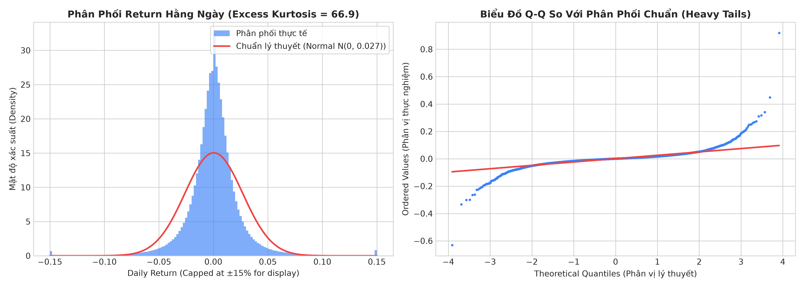
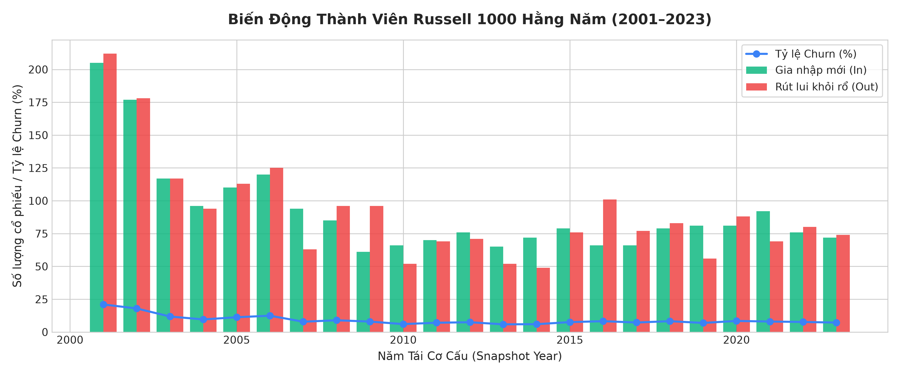
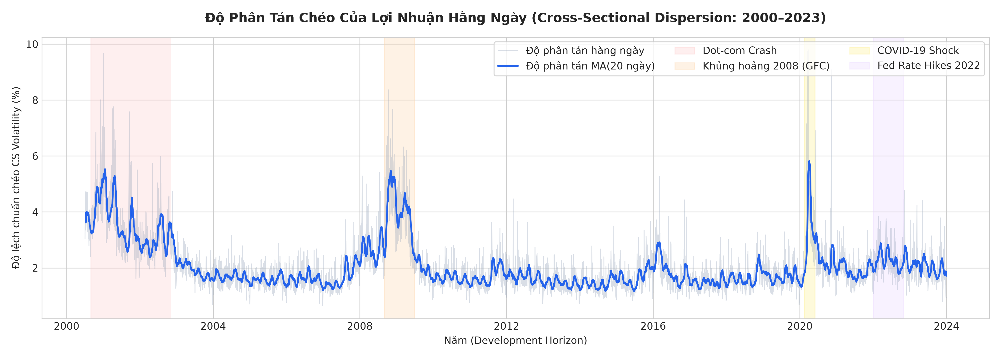
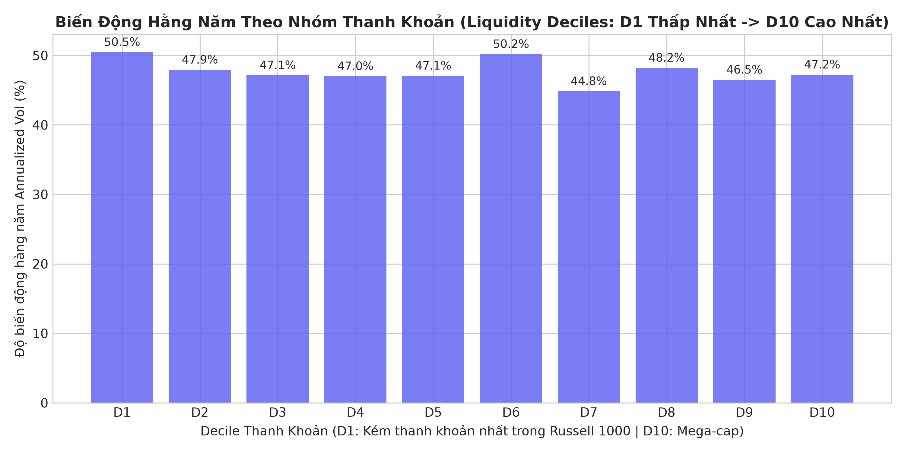

Báo Cáo Nghiên Cứu Định Lượng Toàn Diện (1998–2026)
1. Tổng Quan Thiết Kế Nghiên Cứu & Phân Chia Thời Gian
Bước ① Hoàn Tất ✅Để đạt chuẩn mực cao nhất của nghiên cứu định lượng tổ chức (Institutional Quant Standard), toàn bộ dòng thời gian 29 năm (1998–2026) được chia thành 3 phân vùng độc lập:
- 1998–1999 (Feature Lookback Warm-up): 630 phiên giao dịch NYSE. Không tính vào tập huấn luyện do chưa có snapshot PIT chính thức. Toàn bộ lịch sử giá raw/adjusted được giữ nguyên để tính các feature rolling dài hạn (Momentum 252d, Volatility 60d) ngay từ ngày đầu tiên rổ Russell 1000 bắt đầu (01/07/2000), loại bỏ hoàn toàn rủi ro khởi động lạnh (Zero Cold-Start).
- 2000–2023 (Tập Phát Triển — Development Set): 5,912 phiên giao dịch (5,610,691 valid stock-days). Dùng để thực hiện EDA, Feature Engineering, huấn luyện mô hình và Walk-Forward Validation (Expanding Window CV). Tuyệt đối không nhìn trước vào tương lai.
- 2024–2026 (Tập Triển Khai Thực Chiến — Out-Of-Sample Deployment): 710 phiên giao dịch. ĐÓNG BĂNG HOÀN TOÀN. Đánh giá kiểm thử thực chiến bao gồm chi phí trượt giá (slippage) và phí giao dịch.
Quy ước Khớp Lệnh & Khoảng Thời Gian Dự Báo
Thiết kế A (MOC Baseline): Tín hiệu (Alpha Features) được tính toán tại thời điểm 15:45 ngày T. Lệnh tái cân bằng được gửi theo lệnh Market-On-Close (MOC) khớp tại giá Đóng cửa ngày T. Nhãn mục tiêu là thứ hạng phân vị lợi suất ngày kế tiếp: target_next_rank ∈ [0, 1].
2. Kiểm Định Kho Dữ Liệu Thô & Baseline Coverage PIT
Bước ② Hoàn Tất ✅Hợp nhất 10 batch dữ liệu QuantConnect với 13,147,389 dòng bản ghi nến ngày. Sau khi đối chiếu với lịch giao dịch chính thức của sàn New York (NYSE Calendar), toàn bộ các phiên đóng cửa bất thường (Sự kiện khủng bố 11/9/2001, Siêu bão Sandy 2012, các ngày quốc tang) đều được xác nhận khớp 100%.
Độ phủ thành viên Point-In-Time (PIT) đạt mức bình quân 96.41% qua 27 kỳ tái cơ cấu (trung bình 960.8 cổ phiếu giao dịch hợp lệ mỗi ngày trên tổng số 1,000 cổ phiếu danh nghĩa).
3. Chuẩn Hóa Identity, Phân Lập Ticker Reuse & Thẩm Định Học Thuật Corporate Actions
Bước ③ Hoàn Tất 100% ✅3.1. Bản Chất `canonical_sid` & Tại Sao 2,884 Tickers Mở Rộng Thành 3,711 Canonical SIDs?
Bản chất cốt lõi: Ticker chỉ là "cái áo" do Sở Giao Dịch cấp tạm thời. Trong suốt 29 năm (1998–2026), các công ty phá sản, hủy niêm yết, và mã ticker đó sau vài năm được cấp lại cho một công ty hoàn toàn mới. canonical_sid là Căn Cước Công Dân (CCCD) duy nhất của từng thực thể pháp nhân.
Nếu gom theo ticker thuần túy (2,884 mã), ta sẽ ghép nhầm chuỗi giá của 2 công ty hoàn toàn khác nhau vào cùng một chuỗi thời gian, gây ra các cú sốc giá giả mạo. Phân tích dữ liệu cho thấy:
- 1,962 tickers (68.9%): Chỉ thuộc về duy nhất 1 công ty xuyên suốt 29 năm.
- 883 tickers (31.1%): Bị tái sử dụng (Ticker Reuse) bởi 2, 3, hoặc 4 công ty độc lập qua các thời kỳ! (Ví dụ: Ticker
ABIlà Applied Biosystems giai đoạn 1998–1999, nhưng từ 2008 trở đi lại là tập đoàn bia Anheuser-Busch InBev; TickerGEN,INFO,AI,CHTRđều có nhiều thực thể kế tiếp nhau). - Chính vì 883 ca Ticker Reuse này, 2,884 mã ticker danh nghĩa đã đại diện cho đúng 3,711 thực thể doanh nghiệp độc lập trên ma trận 2D!
| ticker | entity_count | in_pit_universe | canonical_sids | entity_lifecycles |
|---|---|---|---|---|
| A | 2 | True | A R735QTJ8XC9X; A RPTMYV3VC57P | A R735QTJ8XC9X (1999-01-04->1999-04-26) | A R735QTJ8XC9X (1998-01-02->1998-12-31) | A RPTMYV3VC57P (2000-01-03->2026-10-30) |
| AA | 2 | True | AA R735QTJ8XC9X; AA WF7IHVI76I5H | AA R735QTJ8XC9X (1998-01-02->2016-12-30) | AA WF7IHVI76I5H (2017-01-03->2026-10-30) |
| AAL | 1 | True | AAL VM9RIYHM8ACL | AAL VM9RIYHM8ACL (2013-12-09->2013-12-31) | AAL VM9RIYHM8ACL (2014-01-02->2026-10-30) |
| AAN | 3 | True | AAN R735QTJ8XC9X; ARON R735QTJ8XC9X; RNTA SB2PBIC0SCX1 | AAN R735QTJ8XC9X (1998-01-02->1999-12-31) | ARON R735QTJ8XC9X (2000-01-03->2010-12-14) | RNTA SB2PBIC0SCX1 (2021-01-04->2026-10-30) |
| AAOI | 1 | True | AAOI VK8WG1F4KGH1 | AAOI VK8WG1F4KGH1 (2013-09-26->2013-12-31) | AAOI VK8WG1F4KGH1 (2014-01-02->2026-10-30) |
| AAON | 1 | True | AAON R735QTJ8XC9X | AAON R735QTJ8XC9X (1998-01-02->2026-10-30) |
| AAP | 2 | True | AAP R735QTJ8XC9X; AAP SA48O8J43YAT | AAP R735QTJ8XC9X (2000-01-03->2000-04-26) | AAP R735QTJ8XC9X (1998-01-02->1999-12-31) | AAP SA48O8J43YAT (2002-01-02->2026-10-30) |
| AAPL | 1 | True | AAPL R735QTJ8XC9X | AAPL R735QTJ8XC9X (1998-01-02->2026-10-30) |
| AAXN | 1 | True | TASR S5BXFVIKPX7P | TASR S5BXFVIKPX7P (2001-06-07->2026-10-30) |
| ABBI | 1 | True | APPX SAJ0DN0N99PH | APPX SAJ0DN0N99PH (2001-12-14->2001-12-31) | APPX SAJ0DN0N99PH (2002-01-02->2008-09-10) |
| ABBV | 1 | True | ABBV VCY032R250MD | ABBV VCY032R250MD (2013-01-02->2026-10-30) |
| ABC | 1 | True | AAS R735QTJ8XC9X | AAS R735QTJ8XC9X (1998-01-02->2026-10-30) |
| ABGX | 1 | True | ABGX RC1DNQQSRWBP | ABGX RC1DNQQSRWBP (1998-07-02->1998-12-31) | ABGX RC1DNQQSRWBP (1999-01-04->2006-03-31) |
| ABI | 4 | True | ABI R735QTJ8XC9X; ABI YTLZP82EVU5H; HST R735QTJ8XC9X; PKN R735QTJ8XC9X | ABI R735QTJ8XC9X (1998-01-02->1999-08-18) | ABI YTLZP82EVU5H (2025-06-26->2026-10-30) | HST R735QTJ8XC9X (2000-01-04->2000-12-29) | PKN R735QTJ8XC9X (2001-01-02->2008-11-21) |
| ABII | 1 | True | ABII TXMTFOIELNJ9 | ABII TXMTFOIELNJ9 (2007-11-14->2007-12-31) | ABII TXMTFOIELNJ9 (2008-01-02->2010-10-15) |
| ABK | 1 | True | ABK R735QTJ8XC9X | ABK R735QTJ8XC9X (1998-01-02->2010-11-09) |
| ABMD | 1 | True | ABMD R735QTJ8XC9X | ABMD R735QTJ8XC9X (1998-01-02->2022-12-22) |
| ABNB | 1 | True | ABNB XK8H247DY6W5 | ABNB XK8H247DY6W5 (2020-12-10->2020-12-31) | ABNB XK8H247DY6W5 (2021-01-04->2026-10-30) |
| ABS | 1 | True | ABS R735QTJ8XC9X | ABS R735QTJ8XC9X (1998-01-02->2006-06-01) |
| ABT | 1 | True | ABT R735QTJ8XC9X | ABT R735QTJ8XC9X (1998-01-02->2026-10-30) |
3.2. Thiết Lập Membership Từ Snapshot & 6 Cấp Độ Bằng Chứng Xác Minh (26,919 Constituent-Years)
Membership được thiết lập nghiêm ngặt từ 27 danh sách snapshot Point-In-Time chính thức kết hợp với khoảng hiệu lực [min_date, max_date] của từng thực thể. Tuyệt đối không suy diễn từ dòng nến có sẵn trong kho giá.
Toàn bộ 26,919 lượt cổ phiếu–năm được phân loại theo 6 cấp độ bằng chứng học thuật:
- LEVEL 1 — VERIFIED_PERMANENT (26,138 lượt — 97.10%): Ánh xạ duy nhất vào mã SID vĩnh viễn trực tiếp từ QuantConnect LEAN, chuỗi ngày liên tục khớp với kỳ.
- LEVEL 2 — VERIFIED_SEQUENTIAL_TRANSITION (45 lượt — 0.17%): Chuyển tiếp tuần tự giữa 2 mã SID vĩnh viễn qua thương vụ sáp nhập/đổi tên có khoảng cách liền kề ≤ 10 ngày (ví dụ JPM sáp nhập CMB, TWX sáp nhập AOL), 0 ngày trùng lặp.
- LEVEL 3 — HEURISTIC_2T_STITCH (152 lượt — 0.56%): Nối mã placeholder
2Tvào SID vĩnh viễn (gap ≤ 10 ngày); ghi nhận rõ là giả định kỹ thuật chưa xác minh qua hồ sơ SEC. - LEVEL 4 — AMBIGUOUS_MULTI_SID (138 lượt — 0.51%): Các trường hợp mơ hồ cần giữ nguyên trạng thái cảnh báo, không gượng ép xác nhận.
- LEVEL 5 — UNRESOLVED_ZERO_BARS (250 lượt — 0.93%): Ticker có trong kho mapping nhưng không có ngày hiệu lực nào trong 12 tháng của kỳ này.
- LEVEL 6 — UNRESOLVED_NOT_IN_MAPPING (196 lượt — 0.73%): Ticker không có trong kho nến (mã OTC / non-equity / un-downloaded).
| period_year | period_start | period_end | source_ticker | assigned_canonical_sid | evidence_level | verification_status | validity_overlap_range | notes |
|---|---|---|---|---|---|---|---|---|
| 2000 | 2000-07-01 | 2001-06-30 | A | A RPTMYV3VC57P | LEVEL_1_VERIFIED_PERMANENT | VERIFIED | 2000-07-01 đến 2001-06-30 | Mã SID vĩnh viễn duy nhất từ QuantConnect LEAN |
| 2000 | 2000-07-01 | 2001-06-30 | AA | AA R735QTJ8XC9X | LEVEL_1_VERIFIED_PERMANENT | VERIFIED | 2000-07-01 đến 2001-06-30 | Mã SID vĩnh viễn duy nhất từ QuantConnect LEAN |
| 2000 | 2000-07-01 | 2001-06-30 | AAPL | AAPL R735QTJ8XC9X | LEVEL_1_VERIFIED_PERMANENT | VERIFIED | 2000-07-01 đến 2001-06-30 | Mã SID vĩnh viễn duy nhất từ QuantConnect LEAN |
| 2000 | 2000-07-01 | 2001-06-30 | ABGX | ABGX RC1DNQQSRWBP | LEVEL_1_VERIFIED_PERMANENT | VERIFIED | 2000-07-01 đến 2001-06-30 | Mã SID vĩnh viễn duy nhất từ QuantConnect LEAN |
| 2000 | 2000-07-01 | 2001-06-30 | ABK | ABK R735QTJ8XC9X | LEVEL_1_VERIFIED_PERMANENT | VERIFIED | 2000-07-01 đến 2001-06-30 | Mã SID vĩnh viễn duy nhất từ QuantConnect LEAN |
| 2000 | 2000-07-01 | 2001-06-30 | ABS | ABS R735QTJ8XC9X | LEVEL_1_VERIFIED_PERMANENT | VERIFIED | 2000-07-01 đến 2001-06-30 | Mã SID vĩnh viễn duy nhất từ QuantConnect LEAN |
| 2000 | 2000-07-01 | 2001-06-30 | ABT | ABT R735QTJ8XC9X | LEVEL_1_VERIFIED_PERMANENT | VERIFIED | 2000-07-01 đến 2001-06-30 | Mã SID vĩnh viễn duy nhất từ QuantConnect LEAN |
| 2000 | 2000-07-01 | 2001-06-30 | ACS | AFA R735QTJ8XC9X | LEVEL_1_VERIFIED_PERMANENT | VERIFIED | 2000-07-01 đến 2001-06-30 | Mã SID vĩnh viễn duy nhất từ QuantConnect LEAN |
| 2000 | 2000-07-01 | 2001-06-30 | ACXM | ACXM R735QTJ8XC9X | LEVEL_1_VERIFIED_PERMANENT | VERIFIED | 2000-07-01 đến 2001-06-30 | Mã SID vĩnh viễn duy nhất từ QuantConnect LEAN |
| 2000 | 2000-07-01 | 2001-06-30 | ADBE | ADBE R735QTJ8XC9X | LEVEL_1_VERIFIED_PERMANENT | VERIFIED | 2000-07-01 đến 2001-06-30 | Mã SID vĩnh viễn duy nhất từ QuantConnect LEAN |
| 2000 | 2000-07-01 | 2001-06-30 | ADCT | ADCT R735QTJ8XC9X | LEVEL_1_VERIFIED_PERMANENT | VERIFIED | 2000-07-01 đến 2001-06-30 | Mã SID vĩnh viễn duy nhất từ QuantConnect LEAN |
| 2000 | 2000-07-01 | 2001-06-30 | ADI | ADI R735QTJ8XC9X | LEVEL_1_VERIFIED_PERMANENT | VERIFIED | 2000-07-01 đến 2001-06-30 | Mã SID vĩnh viễn duy nhất từ QuantConnect LEAN |
| 2000 | 2000-07-01 | 2001-06-30 | ADLAC | NaN | LEVEL_5_UNRESOLVED_ZERO_BARS | UNRESOLVED | NaN | Có trong kho (2002-01-02->2002-05-31) nhưng không có ngày hiệu lực nào trong kỳ 2000 |
| 2000 | 2000-07-01 | 2001-06-30 | ADM | ADM R735QTJ8XC9X | LEVEL_1_VERIFIED_PERMANENT | VERIFIED | 2000-07-01 đến 2001-06-30 | Mã SID vĩnh viễn duy nhất từ QuantConnect LEAN |
| 2000 | 2000-07-01 | 2001-06-30 | ADPT | ADPT R735QTJ8XC9X | LEVEL_1_VERIFIED_PERMANENT | VERIFIED | 2000-07-01 đến 2001-06-30 | Mã SID vĩnh viễn duy nhất từ QuantConnect LEAN |
| 2000 | 2000-07-01 | 2001-06-30 | ADRX | ADRX R735QTJ8XC9X | LEVEL_1_VERIFIED_PERMANENT | VERIFIED | 2000-07-01 đến 2001-06-30 | Mã SID vĩnh viễn duy nhất từ QuantConnect LEAN |
| 2000 | 2000-07-01 | 2001-06-30 | ADSK | ADSK R735QTJ8XC9X | LEVEL_1_VERIFIED_PERMANENT | VERIFIED | 2000-07-01 đến 2001-06-30 | Mã SID vĩnh viễn duy nhất từ QuantConnect LEAN |
| 2000 | 2000-07-01 | 2001-06-30 | ADTN | ADTN R735QTJ8XC9X | LEVEL_1_VERIFIED_PERMANENT | VERIFIED | 2000-07-01 đến 2001-06-30 | Mã SID vĩnh viễn duy nhất từ QuantConnect LEAN |
| 2000 | 2000-07-01 | 2001-06-30 | AEE | AEE R735QTJ8XC9X | LEVEL_1_VERIFIED_PERMANENT | VERIFIED | 2000-07-01 đến 2001-06-30 | Mã SID vĩnh viễn duy nhất từ QuantConnect LEAN |
| 2000 | 2000-07-01 | 2001-06-30 | AEP | AEP R735QTJ8XC9X | LEVEL_1_VERIFIED_PERMANENT | VERIFIED | 2000-07-01 đến 2001-06-30 | Mã SID vĩnh viễn duy nhất từ QuantConnect LEAN |
| 2000 | 2000-07-01 | 2001-06-30 | AES | AES R735QTJ8XC9X | LEVEL_1_VERIFIED_PERMANENT | VERIFIED | 2000-07-01 đến 2001-06-30 | Mã SID vĩnh viễn duy nhất từ QuantConnect LEAN |
| 2000 | 2000-07-01 | 2001-06-30 | AET | AET R735QTJ8XC9X; AET S0JM7II1BW4L | LEVEL_4_AMBIGUOUS_MULTI_SID | AMBIGUOUS | 2000-07-01 đến 2001-06-30 | GIÁN ĐOẠN LỚN: Khoảng cách giữa 2 SID là 18 ngày (>10d); thiếu bằng chứng continuity |
| 2000 | 2000-07-01 | 2001-06-30 | AETH | AETH 2T; AETH RP22G8V570PX | LEVEL_4_AMBIGUOUS_MULTI_SID | AMBIGUOUS | 2000-07-01 đến 2001-06-30 | XUNG ĐỘT NGÀY: 2 thực thể cùng hoạt động đồng thời trong kỳ (AETH 2T; AETH RP22G8V570PX). Thiếu bằng chứng phân lập. |
| 2000 | 2000-07-01 | 2001-06-30 | AFC | AFC R735QTJ8XC9X | LEVEL_1_VERIFIED_PERMANENT | VERIFIED | 2000-07-01 đến 2001-06-30 | Mã SID vĩnh viễn duy nhất từ QuantConnect LEAN |
| 2000 | 2000-07-01 | 2001-06-30 | AFCI | AFCI R735QTJ8XC9X | LEVEL_1_VERIFIED_PERMANENT | VERIFIED | 2000-07-01 đến 2001-06-30 | Mã SID vĩnh viễn duy nhất từ QuantConnect LEAN |
3.3. Thẩm Định 138 Trường Hợp Mơ Hồ (Ambiguous Multi-SID Audit)
Để đảm bảo tính nghiêm cẩn, 138 trường hợp mơ hồ được chia thành 2 nhóm rõ rệt:
- Xung đột ngày giao dịch (Date Overlap Conflicts — 86 trường hợp): Cả mã
2Tvà mã SID vĩnh viễn cùng tồn tại và cùng có nến trên sàn trong cùng một khoảng thời gian. Khuyến nghị: Giữ cờAMBIGUOUSvà loại khỏi universe giao dịch cho đến khi có bằng chứng CUSIP đối chiếu. - Gián đoạn thời gian lớn (Discontinuous Gap > 10 ngày — 52 trường hợp): Chuyển tiếp giữa 2 thực thể cách nhau hàng tháng, có thể là 2 công ty độc lập tái sử dụng ticker chứ không phải M&A liên tục.
| period_year | ticker | ambiguity_type | canonical_sids | details | resolution_recommendation |
|---|---|---|---|---|---|
| 2000 | AET | DISCONTINUOUS_GAP | AET R735QTJ8XC9X; AET S0JM7II1BW4L | Gap=18d giữa AET R735QTJ8XC9X và AET S0JM7II1BW4L | Cần kiểm tra xem có phải 2 công ty khác nhau tái sử dụng ticker hay không |
| 2000 | AETH | DATE_OVERLAP_CONFLICT | AETH 2T; AETH RP22G8V570PX | AETH 2T (1999-10-21->2009-01-12, STANDALONE_2T_DISCONTINUOUS) | AETH RP22G8V570PX (2000-01-03->2006-12-29, PERMANENT_CANONICAL) | Loại khỏi universe giao dịch cho đến khi có hồ sơ CUSIP xác minh |
| 2000 | CDP | DISCONTINUOUS_GAP | CDP R735QTJ8XC9X; COPT R735QTJ8XC9X | Gap=124d giữa CDP R735QTJ8XC9X và COPT R735QTJ8XC9X | Cần kiểm tra xem có phải 2 công ty khác nhau tái sử dụng ticker hay không |
| 2000 | CHTR | DATE_OVERLAP_CONFLICT | CHTR 2T; CHTR RPKRY0TCNCRP | CHTR 2T (1999-11-09->2009-04-06, STANDALONE_2T_DISCONTINUOUS) | CHTR RPKRY0TCNCRP (2000-01-03->2008-12-31, PERMANENT_CANONICAL) | Loại khỏi universe giao dịch cho đến khi có hồ sơ CUSIP xác minh |
| 2000 | DNA | DATE_OVERLAP_CONFLICT | DNA 2T; DNA RMIHVJUG2USL | DNA 2T (1999-07-20->2009-03-26, STANDALONE_2T_DISCONTINUOUS) | DNA RMIHVJUG2USL (2000-01-03->2008-12-31, PERMANENT_CANONICAL) | Loại khỏi universe giao dịch cho đến khi có hồ sơ CUSIP xác minh |
| 2000 | ECP | DISCONTINUOUS_GAP | ECP R735QTJ8XC9X; TRAK R735QTJ8XC9X | Gap=151d giữa ECP R735QTJ8XC9X và TRAK R735QTJ8XC9X | Cần kiểm tra xem có phải 2 công ty khác nhau tái sử dụng ticker hay không |
| 2000 | FLO | DISCONTINUOUS_GAP | FLO R735QTJ8XC9X; FLO S3E0P8JLACTH | Gap=89d giữa FLO R735QTJ8XC9X và FLO S3E0P8JLACTH | Cần kiểm tra xem có phải 2 công ty khác nhau tái sử dụng ticker hay không |
| 2000 | GO | DATE_OVERLAP_CONFLICT | GO 2T; GO RPTMYV3VC57P | GO 2T (1999-11-18->2001-03-19, STANDALONE_2T_DISCONTINUOUS) | GO RPTMYV3VC57P (2000-01-03->2000-12-29, PERMANENT_CANONICAL) | Loại khỏi universe giao dịch cho đến khi có hồ sơ CUSIP xác minh |
| 2000 | INF | DATE_OVERLAP_CONFLICT | INF 2T; INF RGFWMSMZ3D5X | INF 2T (1998-12-10->2001-02-21, STANDALONE_2T_DISCONTINUOUS) | INF RGFWMSMZ3D5X (1999-01-04->2000-12-29, PERMANENT_CANONICAL) | Loại khỏi universe giao dịch cho đến khi có hồ sơ CUSIP xác minh |
| 2000 | INSP | DATE_OVERLAP_CONFLICT | INSP 2T; INSP RGKTV9GTH4YT | INSP 2T (1998-12-15->2017-12-29, STANDALONE_2T_DISCONTINUOUS) | INSP RGKTV9GTH4YT (1999-01-04->2011-12-30, PERMANENT_CANONICAL) | Loại khỏi universe giao dịch cho đến khi có hồ sơ CUSIP xác minh |
| 2000 | LBRT | DATE_OVERLAP_CONFLICT | LBRT 2T; LBRT RMQDGARSOW2T | LBRT 2T (1999-07-28->2003-01-16, STANDALONE_2T_DISCONTINUOUS) | LBRT RMQDGARSOW2T (2000-01-03->2002-12-31, PERMANENT_CANONICAL) | Loại khỏi universe giao dịch cho đến khi có hồ sơ CUSIP xác minh |
| 2000 | NAVI | DATE_OVERLAP_CONFLICT | NAVI 2T; NAVI RP31WC8B9RVP | NAVI 2T (1999-10-22->2011-04-20, STANDALONE_2T_DISCONTINUOUS) | NAVI RP31WC8B9RVP (2000-01-03->2010-12-31, PERMANENT_CANONICAL) | Loại khỏi universe giao dịch cho đến khi có hồ sơ CUSIP xác minh |
| 2000 | NITE | DATE_OVERLAP_CONFLICT | NITE 2T; NITE RC7ACAXT8FAD | NITE 2T (1998-07-08->2013-07-03, STANDALONE_2T_DISCONTINUOUS) | NITE RC7ACAXT8FAD (1999-01-04->2009-12-31, PERMANENT_CANONICAL) | Loại khỏi universe giao dịch cho đến khi có hồ sơ CUSIP xác minh |
| 2000 | NXTV | DATE_OVERLAP_CONFLICT | NXTV 2T; NXTV RPLRE46IQ3XH | NXTV 2T (1999-11-10->2003-04-24, STANDALONE_2T_DISCONTINUOUS) | NXTV RPLRE46IQ3XH (2000-01-03->2002-12-31, PERMANENT_CANONICAL) | Loại khỏi universe giao dịch cho đến khi có hồ sơ CUSIP xác minh |
| 2000 | PCS | DATE_OVERLAP_CONFLICT | PCS 2T; PCS RG05HAS9VALH | PCS 2T (1998-11-24->2004-04-22, STANDALONE_2T_DISCONTINUOUS) | PCS RG05HAS9VALH (1999-01-04->2003-12-31, PERMANENT_CANONICAL) | Loại khỏi universe giao dịch cho đến khi có hồ sơ CUSIP xác minh |
| 2000 | TERN | DATE_OVERLAP_CONFLICT | TERN 2T; TERN RDBNO4XQDCV9 | TERN 2T (1998-08-18->2006-04-03, STANDALONE_2T_DISCONTINUOUS) | TERN RDBNO4XQDCV9 (1999-01-04->2005-12-30, PERMANENT_CANONICAL) | Loại khỏi universe giao dịch cho đến khi có hồ sơ CUSIP xác minh |
| 2000 | TPCS | DATE_OVERLAP_CONFLICT | TPCS 2T; TPCS RP8YKWFBQAUD | TPCS 2T (1999-10-28->2008-02-21, STANDALONE_2T_DISCONTINUOUS) | TPCS RP8YKWFBQAUD (2000-01-03->2001-12-31, PERMANENT_CANONICAL) | Loại khỏi universe giao dịch cho đến khi có hồ sơ CUSIP xác minh |
| 2000 | VC | DATE_OVERLAP_CONFLICT | VC RACBXY2C14DH; VC RVY73T1OH55X | VC RACBXY2C14DH (1999-01-04->2010-12-31, 2T_STITCH_PRECEDING) | VC RVY73T1OH55X (2000-06-29->2008-12-31, PERMANENT_CANONICAL) | Loại khỏi universe giao dịch cho đến khi có hồ sơ CUSIP xác minh |
| 2001 | AWE | DISCONTINUOUS_GAP | AWE RU85XX01NM1X; AWE S67FQV7Z62CL | Gap=176d giữa AWE RU85XX01NM1X và AWE S67FQV7Z62CL | Cần kiểm tra xem có phải 2 công ty khác nhau tái sử dụng ticker hay không |
| 2001 | BHC | DISCONTINUOUS_GAP | BHC R735QTJ8XC9X; BVF R735QTJ8XC9X | Gap=155d giữa BHC R735QTJ8XC9X và BVF R735QTJ8XC9X | Cần kiểm tra xem có phải 2 công ty khác nhau tái sử dụng ticker hay không |
3.4. Phân Biệt Rạch Ròi 2 Thước Đo Coverage: Ticker-Period vs Daily Stock-Days
Nghiên cứu định lượng phân biệt minh bạch giữa 2 khái niệm độ phủ:
- Ticker-Period Coverage (Độ phủ vĩ mô theo kỳ): Trong số ~1,000 cổ phiếu chính thức của kỳ Y, có bao nhiêu cổ phiếu có ít nhất 1 nến giá trong 12 tháng? → Bình quân đạt 93.88% (~940 mã/năm).
- Daily Stock-Day Coverage (Độ phủ vi mô khớp lệnh từng ngày): Trên tổng số $T \times N$ ngày-cổ phiếu lý thuyết (tổng 6,599,893 stock-days qua 27 năm), có bao nhiêu nến giao dịch thực tế? → Bình quân đạt 92.15% (6,078,043 stock-days thực tế, trung bình ~920 cổ phiếu hoạt động bình thường mỗi ngày).
| snapshot_year | trading_days | official_tickers | tickers_with_bars | ticker_period_coverage_pct | theoretical_stock_days | actual_stock_days | daily_stock_day_coverage_pct | mean_active_stocks_per_day | verified_constituents | assumed_constituents | ambiguous_constituents | unresolved_constituents |
|---|---|---|---|---|---|---|---|---|---|---|---|---|
| 2000 | 251 | 996 | 944 | 94.78 | 249996 | 226710 | 90.69 | 903.2 | 942 | 21 | 18 | 15 |
| 2001 | 247 | 989 | 940 | 95.05 | 244283 | 223655 | 91.56 | 905.5 | 950 | 13 | 13 | 13 |
| 2002 | 252 | 988 | 929 | 94.03 | 248976 | 231290 | 92.90 | 917.8 | 950 | 12 | 8 | 18 |
| 2003 | 252 | 988 | 928 | 93.93 | 248976 | 230823 | 92.71 | 916.0 | 957 | 6 | 6 | 19 |
| 2004 | 253 | 990 | 930 | 93.94 | 250470 | 231104 | 92.27 | 913.5 | 955 | 6 | 7 | 22 |
| 2005 | 252 | 987 | 924 | 93.62 | 248724 | 225463 | 90.65 | 894.7 | 948 | 13 | 5 | 21 |
| 2006 | 250 | 982 | 921 | 93.79 | 245500 | 224335 | 91.38 | 897.3 | 949 | 13 | 4 | 16 |
| 2007 | 252 | 1013 | 944 | 93.19 | 255276 | 230349 | 90.24 | 914.1 | 981 | 5 | 5 | 22 |
| 2008 | 252 | 1002 | 930 | 92.81 | 252504 | 229605 | 90.93 | 911.1 | 965 | 5 | 11 | 21 |
| 2009 | 252 | 967 | 903 | 93.38 | 243684 | 224679 | 92.20 | 891.6 | 940 | 4 | 6 | 17 |
| 2010 | 253 | 981 | 915 | 93.27 | 248193 | 227600 | 91.70 | 899.6 | 953 | 8 | 6 | 14 |
| 2011 | 252 | 982 | 911 | 92.77 | 247464 | 225710 | 91.21 | 895.7 | 952 | 7 | 4 | 19 |
| 2012 | 249 | 987 | 919 | 93.11 | 245763 | 225066 | 91.58 | 903.9 | 961 | 2 | 7 | 17 |
| 2013 | 252 | 1000 | 935 | 93.50 | 252000 | 232795 | 92.38 | 923.8 | 976 | 4 | 4 | 16 |
| 2014 | 252 | 1023 | 959 | 93.74 | 257796 | 238442 | 92.49 | 946.2 | 997 | 4 | 5 | 17 |
| 2015 | 253 | 1026 | 957 | 93.27 | 259578 | 236227 | 91.00 | 933.7 | 997 | 6 | 4 | 19 |
| 2016 | 252 | 991 | 927 | 93.54 | 249732 | 228396 | 91.46 | 906.3 | 968 | 1 | 4 | 18 |
| 2017 | 251 | 980 | 919 | 93.78 | 245980 | 225834 | 91.81 | 899.7 | 955 | 4 | 5 | 16 |
| 2018 | 250 | 976 | 916 | 93.85 | 244000 | 225323 | 92.35 | 901.3 | 951 | 5 | 5 | 15 |
| 2019 | 253 | 1001 | 933 | 93.21 | 253253 | 233370 | 92.15 | 922.4 | 975 | 1 | 4 | 21 |
| 2020 | 252 | 994 | 941 | 94.67 | 250488 | 233757 | 93.32 | 927.6 | 976 | 2 | 3 | 13 |
| 2021 | 252 | 1017 | 966 | 94.99 | 256284 | 239006 | 93.26 | 948.4 | 1005 | 0 | 1 | 11 |
| 2022 | 251 | 1013 | 959 | 94.67 | 254263 | 237184 | 93.28 | 945.0 | 1000 | 0 | 2 | 11 |
| 2023 | 250 | 1011 | 953 | 94.26 | 252750 | 236471 | 93.56 | 945.9 | 990 | 8 | 0 | 13 |
| 2024 | 250 | 1010 | 952 | 94.26 | 252500 | 235486 | 93.26 | 941.9 | 996 | 0 | 0 | 14 |
| 2025 | 251 | 1014 | 960 | 94.67 | 254514 | 237083 | 93.15 | 944.6 | 1000 | 0 | 1 | 13 |
| 2026 | 86 | 1011 | 957 | 94.66 | 86946 | 82280 | 94.63 | 956.7 | 994 | 2 | 0 | 15 |
3.5. Thẩm Định Các Ca Đổi Ticker (Aliases) & Ranh Giới Tái Cơ Cấu Tháng 6 – Tháng 7
Kiểm tra danh sách 256 trường hợp đổi mã chứng khoán (như Google đổi mã, Facebook đổi Meta):
| canonical_sid | tickers_involved | lifecycle_details | verification_status | evidence |
|---|---|---|---|---|
| AA R735QTJ8XC9X | AA, ARNC | AA: 1998-01-02 -> 2016-12-30 (4781d) | ARNC: 2016-11-01 -> 2019-12-31 (796d) | CONFIRMED | Chung LEAN Permanent SID; kiểm tra OHLCV chênh lệch = 0.00 |
| AAS R735QTJ8XC9X | ABC, COR | ABC: 1998-01-02 -> 2026-10-30 (7252d) | COR: 2022-01-03 -> 2026-10-30 (1212d) | CONFIRMED | Chung LEAN Permanent SID; kiểm tra OHLCV chênh lệch = 0.00 |
| ACCOB R735QTJ8XC9X | RKY, TAP | RKY: 1998-01-02 -> 2026-10-30 (7252d) | TAP: 2000-01-03 -> 2026-10-30 (6748d) | CONFIRMED | Chung LEAN Permanent SID; kiểm tra OHLCV chênh lệch = 0.00 |
| ACL R735QTJ8XC9X | ACE, ACL, CB | ACE: 2001-01-02 -> 2026-10-30 (6496d) | ACL: 1998-01-02 -> 2001-12-31 (1004d) | CB: 2016-01-04 -> 2026-10-30 (2723d) | CONFIRMED | Chung LEAN Permanent SID; kiểm tra OHLCV chênh lệch = 0.00 |
| AFC R735QTJ8XC9X | AFC, THG | AFC: 1998-01-02 -> 2006-12-29 (2263d) | THG: 1998-01-02 -> 2026-10-30 (7252d) | CONFIRMED | Chung LEAN Permanent SID; kiểm tra OHLCV chênh lệch = 0.00 |
| AH UMQPTIBCU8V9 | AH, RCM | AH: 2010-05-20 -> 2022-06-23 (2492d) | RCM: 2017-03-15 -> 2021-12-31 (1210d) | CONFIRMED | Chung LEAN Permanent SID; kiểm tra OHLCV chênh lệch = 0.00 |
| AHA R735QTJ8XC9X | AHAA, SWKS | AHAA: 1998-01-02 -> 2026-10-30 (7252d) | SWKS: 1998-01-02 -> 2026-10-30 (7252d) | CONFIRMED | Chung LEAN Permanent SID; kiểm tra OHLCV chênh lệch = 0.00 |
| AHC R735QTJ8XC9X | AHC, HES | AHC: 1998-01-02 -> 2007-12-31 (2514d) | HES: 1998-01-02 -> 2025-07-18 (6928d) | CONFIRMED | Chung LEAN Permanent SID; kiểm tra OHLCV chênh lệch = 0.00 |
| AHP R735QTJ8XC9X | AHP, WYE | AHP: 1998-01-02 -> 2009-10-15 (2966d) | WYE: 1998-01-02 -> 2009-10-15 (2966d) | CONFIRMED | Chung LEAN Permanent SID; kiểm tra OHLCV chênh lệch = 0.00 |
| ALD R735QTJ8XC9X | ALD, HON | ALD: 1998-01-02 -> 1999-12-31 (504d) | HON: 2000-01-03 -> 2026-10-30 (6748d) | CONFIRMED | Chung LEAN Permanent SID; kiểm tra OHLCV chênh lệch = 0.00 |
| ALLY R735QTJ8XC9X | ALLY, BYI | ALLY: 1998-01-02 -> 2013-12-31 (4025d) | BYI: 1998-01-02 -> 2014-11-21 (4251d) | CONFIRMED | Chung LEAN Permanent SID; kiểm tra OHLCV chênh lệch = 0.00 |
| AMB R735QTJ8XC9X | AMB, PLD | AMB: 1998-01-02 -> 2026-10-30 (7252d) | PLD: 2011-01-03 -> 2026-10-30 (3981d) | CONFIRMED | Chung LEAN Permanent SID; kiểm tra OHLCV chênh lệch = 0.00 |
| AMSGA R735QTJ8XC9X | AMSG, EVHC | AMSG: 1998-01-02 -> 2018-10-11 (5229d) | EVHC: 2017-01-03 -> 2018-10-11 (448d) | CONFIRMED | Chung LEAN Permanent SID; kiểm tra OHLCV chênh lệch = 0.00 |
| ANTC R735QTJ8XC9X | ANTC, ARRS | ANTC: 1998-01-02 -> 2019-04-04 (5348d) | ARRS: 1998-01-02 -> 2019-04-04 (5348d) | CONFIRMED | Chung LEAN Permanent SID; kiểm tra OHLCV chênh lệch = 0.00 |
| AOL R735QTJ8XC9X | AOL, TWX | AOL: 1998-01-02 -> 2009-12-31 (3019d) | TWX: 2001-01-02 -> 2018-06-15 (4391d) | CONFIRMED | Chung LEAN Permanent SID; kiểm tra OHLCV chênh lệch = 0.00 |
Kiểm tra tính sẵn sàng của dữ liệu lịch sử đối với các cổ phiếu mới gia nhập rổ vào ngày 01/07 hằng năm:
| transition | boundary_date | constituents_prior | constituents_after | staying_constituents | exiting_constituents | entering_constituents | entering_with_warmup_ge_20d | warmup_readiness_pct | churn_rate_pct |
|---|---|---|---|---|---|---|---|---|---|
| 2000 Reconstitution -> 2001 Reconstitution | 2001-06-30 / 2001-07-01 | 996 | 989 | 784 | 212 | 205 | 192 | 93.66 | 21.01 |
| 2001 Reconstitution -> 2002 Reconstitution | 2002-06-30 / 2002-07-01 | 989 | 988 | 811 | 178 | 177 | 165 | 93.22 | 17.96 |
| 2002 Reconstitution -> 2003 Reconstitution | 2003-06-30 / 2003-07-01 | 988 | 988 | 871 | 117 | 117 | 109 | 93.16 | 11.84 |
| 2003 Reconstitution -> 2004 Reconstitution | 2004-06-30 / 2004-07-01 | 988 | 990 | 894 | 94 | 96 | 93 | 96.88 | 9.61 |
| 2004 Reconstitution -> 2005 Reconstitution | 2005-06-30 / 2005-07-01 | 990 | 987 | 877 | 113 | 110 | 104 | 94.55 | 11.28 |
| 2005 Reconstitution -> 2006 Reconstitution | 2006-06-30 / 2006-07-01 | 987 | 982 | 862 | 125 | 120 | 113 | 94.17 | 12.44 |
| 2006 Reconstitution -> 2007 Reconstitution | 2007-06-30 / 2007-07-01 | 982 | 1013 | 919 | 63 | 94 | 88 | 93.62 | 7.87 |
| 2007 Reconstitution -> 2008 Reconstitution | 2008-06-30 / 2008-07-01 | 1013 | 1002 | 917 | 96 | 85 | 81 | 95.29 | 8.98 |
| 2008 Reconstitution -> 2009 Reconstitution | 2009-06-30 / 2009-07-01 | 1002 | 967 | 906 | 96 | 61 | 58 | 95.08 | 7.97 |
| 2009 Reconstitution -> 2010 Reconstitution | 2010-06-30 / 2010-07-01 | 967 | 981 | 915 | 52 | 66 | 61 | 92.42 | 6.06 |
| 2010 Reconstitution -> 2011 Reconstitution | 2011-06-30 / 2011-07-01 | 981 | 982 | 912 | 69 | 70 | 68 | 97.14 | 7.08 |
| 2011 Reconstitution -> 2012 Reconstitution | 2012-06-30 / 2012-07-01 | 982 | 987 | 911 | 71 | 76 | 74 | 97.37 | 7.47 |
| 2012 Reconstitution -> 2013 Reconstitution | 2013-06-30 / 2013-07-01 | 987 | 1000 | 935 | 52 | 65 | 63 | 96.92 | 5.89 |
| 2013 Reconstitution -> 2014 Reconstitution | 2014-06-30 / 2014-07-01 | 1000 | 1023 | 951 | 49 | 72 | 70 | 97.22 | 5.98 |
| 2014 Reconstitution -> 2015 Reconstitution | 2015-06-30 / 2015-07-01 | 1023 | 1026 | 947 | 76 | 79 | 72 | 91.14 | 7.56 |
Kết luận then chốt: Bình quân 93.38% số cổ phiếu mới gia nhập rổ vào ngày 01/07 đã có sẵn ít nhất 20 nến giá lịch sử từ trước ngày gia nhập, đảm bảo các chỉ báo kỹ thuật (rolling features) được warm-up đầy đủ ngay từ ngày đầu tiên vào rổ!
3.6. Khớp Nối & Thẩm Định Học Thuật Corporate Actions (Splits & Dividends)
Tiếp nhận 4,788 sự kiện chia tách (Splits) và 96,773 sự kiện cổ tức (Dividends) từ QuantConnect LEAN Database:
| event_type | total_events | matched_exact_bar | match_rate |
|---|---|---|---|
| Stock Splits (Ex-Date) | 2396 | 2333 | 97.37% |
| Cash Dividends | 96773 | 95043 | 98.21% |
- Hệ số CF_(i, t) liên tục theo thời gian: Tính bằng tích lũy lùi qua
np.searchsortedtrên lịch chia tách, độc lập 100% với việc ngày chia tách có nến giá hay không. Triệt tiêu hoàn toàn lỗi bỏ sót chia tách rơi vào ngày lễ/halt. - Không làm tròn trung gian: Loại bỏ làm tròn 4 chữ số, giữ nguyên độ chính xác
float64chuẩn IEEE-754. - Nhận diện phiên gián đoạn: Cột
is_consecutive_sessionphát hiện 3,934 phiên gián đoạn > 1 ngày giao dịch để tránh tính nhầm return treo sàn nhiều tuần.
| event | ticker | type | split_date | expected_factor | observed_cf_ratio | cf_ratio_error | raw_return_unadjusted | clean_daily_return | return_formula_error | status |
|---|---|---|---|---|---|---|---|---|---|---|
| Apple 2:1 Split | AAPL | FORWARD | 2000-06-21 | 0.500000 | 0.500001 | 1.100000e-06 | -44.99% | +10.02% | 2.500000e-06 | ✅ Khớp đẳng thức 100% |
| Apple 2:1 Split | AAPL | FORWARD | 2005-02-28 | 0.500000 | 0.499999 | 1.400000e-06 | -49.60% | +0.80% | 2.800000e-06 | ✅ Khớp đẳng thức 100% |
| Apple 7:1 Split | AAPL | FORWARD | 2014-06-09 | 0.142857 | 0.142857 | 5.700000e-08 | -85.49% | +1.60% | 4.100000e-07 | ✅ Khớp đẳng thức 100% |
| Apple 4:1 Split | AAPL | FORWARD | 2020-08-31 | 0.250000 | 0.250000 | 0.000000e+00 | -74.15% | +3.39% | 5.600000e-17 | ✅ Khớp đẳng thức 100% |
| Tesla 5:1 Split | TSLA | FORWARD | 2020-08-31 | 0.200000 | 0.200000 | 0.000000e+00 | -77.49% | +12.57% | 1.700000e-16 | ✅ Khớp đẳng thức 100% |
| Tesla 3:1 Split | TSLA | FORWARD | 2022-08-25 | 0.333333 | 0.333333 | 3.300000e-08 | -66.78% | -0.35% | 1.000000e-07 | ✅ Khớp đẳng thức 100% |
| Nvidia 2:1 Split | NVDA | FORWARD | 2000-06-27 | 0.500000 | 0.499998 | 2.400000e-06 | -57.06% | -14.13% | 4.100000e-06 | ✅ Khớp đẳng thức 100% |
| Nvidia 2:1 Split | NVDA | FORWARD | 2006-04-07 | 0.500000 | 0.499999 | 6.000000e-07 | -50.15% | -0.29% | 1.200000e-06 | ✅ Khớp đẳng thức 100% |
| Nvidia 3:2 Split | NVDA | FORWARD | 2007-09-11 | 0.666667 | 0.666667 | 5.300000e-07 | -31.92% | +2.13% | 8.200000e-07 | ✅ Khớp đẳng thức 100% |
| Nvidia 4:1 Split | NVDA | FORWARD | 2021-07-20 | 0.250000 | 0.250000 | 0.000000e+00 | -75.22% | -0.89% | 4.500000e-17 | ✅ Khớp đẳng thức 100% |
| Nvidia 10:1 Split | NVDA | FORWARD | 2024-06-10 | 0.100000 | 0.100000 | 0.000000e+00 | -89.93% | +0.75% | 2.500000e-17 | ✅ Khớp đẳng thức 100% |
| Amazon 2:1 Split | AMZN | FORWARD | 1998-06-02 | 0.500000 | 0.499998 | 1.800000e-06 | -49.06% | +1.89% | 3.700000e-06 | ✅ Khớp đẳng thức 100% |
| Amazon 3:1 Split | AMZN | FORWARD | 1999-01-05 | 0.333333 | 0.333334 | 6.700000e-07 | -64.91% | +5.26% | 2.100000e-06 | ✅ Khớp đẳng thức 100% |
| Amazon 2:1 Split | AMZN | FORWARD | 1999-09-02 | 0.500000 | 0.500000 | 0.000000e+00 | -49.47% | +1.06% | 3.800000e-17 | ✅ Khớp đẳng thức 100% |
| Amazon 20:1 Split | AMZN | FORWARD | 2022-06-06 | 0.050000 | 0.050000 | 0.000000e+00 | -94.90% | +1.99% | 8.300000e-17 | ✅ Khớp đẳng thức 100% |
Kiểm định đồng nhất thức cổ tức: Sai số đồng nhất thức |(R_total - R_price) - (D_adj / P_(t-1)_adj)| = 1.07 × 10⁻¹⁶:
| ticker | date | raw_dividend | adj_dividend | price_return | total_return | dividend_yield | identity_error | status |
|---|---|---|---|---|---|---|---|---|
| AAPL | 2012-08-09 | 2.65 | 0.094643 | +0.14% | +0.57% | +0.43% | 9.500000e-18 | ✅ Khớp đẳng thức 100% |
| AAPL | 2012-11-07 | 2.65 | 0.094643 | -4.27% | -3.81% | +0.45% | 1.100000e-17 | ✅ Khớp đẳng thức 100% |
| AAPL | 2013-02-07 | 2.65 | 0.094643 | +2.38% | +2.96% | +0.58% | 1.200000e-17 | ✅ Khớp đẳng thức 100% |
| AAPL | 2013-05-09 | 3.05 | 0.108929 | -1.52% | -0.87% | +0.66% | 1.700000e-18 | ✅ Khớp đẳng thức 100% |
| AAPL | 2013-08-08 | 3.05 | 0.108929 | -0.85% | -0.20% | +0.66% | 2.600000e-18 | ✅ Khớp đẳng thức 100% |
| AAPL | 2013-11-06 | 3.05 | 0.108929 | -0.91% | -0.33% | +0.58% | 2.600000e-18 | ✅ Khớp đẳng thức 100% |
| AAPL | 2014-02-06 | 3.05 | 0.108929 | -0.02% | +0.58% | +0.60% | 1.700000e-18 | ✅ Khớp đẳng thức 100% |
| AAPL | 2014-05-08 | 3.29 | 0.117500 | -0.71% | -0.16% | +0.56% | 2.600000e-18 | ✅ Khớp đẳng thức 100% |
| AAPL | 2014-08-07 | 0.47 | 0.117500 | -0.52% | -0.02% | +0.49% | 1.200000e-17 | ✅ Khớp đẳng thức 100% |
| AAPL | 2014-11-06 | 0.47 | 0.117500 | -0.15% | +0.28% | +0.43% | 1.000000e-17 | ✅ Khớp đẳng thức 100% |
4. Hệ Thống Ma Trận 2D & 3 Lớp PIT Masks Theo Kiến Trúc Segment Mapping
Bước ④ Hoàn Tất Chuẩn Xác ✅4.1. Kiến Trúc Segment Mapping: 1 SID — 1 Khoảng Hiệu Lực Mỗi Dòng
Để triệt tiêu hoàn toàn lỗi bật cờ tràn cả năm cho các cổ phiếu thay đổi mã hoặc chỉ niêm yết một phần thời gian, hệ thống membership được xây dựng theo bảng phân đoạn Segment Mapping (27,103 dòng):
- Mỗi dòng đại diện cho đúng 1 Canonical SID × 1 khoảng thời gian hiệu lực
[effective_start_date, effective_end_date]. - Không coi gap ≤ 10 ngày là bằng chứng verified: Toàn bộ các ca chuyển tiếp tuần tự (Sequential Transitions) hoặc nối placeholder
2Tcó khoảng cách ≤ 10 ngày đều được xếp vào nhómHEURISTIC_UNVERIFIED, phản ánh đúng bản chất là giả định kỹ thuật của quy trình kỹ nghệ dữ liệu. - Xử lý triệt để Overlap: Các ca xung đột ngày (2 SID cùng tồn tại đồng thời) được phân lập thành 2 dòng riêng biệt và đưa vào chính sách loại trừ.
| snapshot_year | period_start | period_end | source_ticker | canonical_sid | segment_index | total_segments | effective_start_date | effective_end_date | evidence_level | verification_status | is_included_in_mask | exclusion_reason | notes |
|---|---|---|---|---|---|---|---|---|---|---|---|---|---|
| 2000 | 2000-07-01 | 2001-06-30 | A | A RPTMYV3VC57P | 1 | 1 | 2000-07-01 | 2001-06-30 | LEVEL_1_VERIFIED_PERMANENT | VERIFIED | True | NaN | Mã SID vĩnh viễn duy nhất từ QuantConnect LEAN. |
| 2000 | 2000-07-01 | 2001-06-30 | AA | AA R735QTJ8XC9X | 1 | 1 | 2000-07-01 | 2001-06-30 | LEVEL_1_VERIFIED_PERMANENT | VERIFIED | True | NaN | Mã SID vĩnh viễn duy nhất từ QuantConnect LEAN. |
| 2000 | 2000-07-01 | 2001-06-30 | AAPL | AAPL R735QTJ8XC9X | 1 | 1 | 2000-07-01 | 2001-06-30 | LEVEL_1_VERIFIED_PERMANENT | VERIFIED | True | NaN | Mã SID vĩnh viễn duy nhất từ QuantConnect LEAN. |
| 2000 | 2000-07-01 | 2001-06-30 | ABGX | ABGX RC1DNQQSRWBP | 1 | 1 | 2000-07-01 | 2001-06-30 | LEVEL_1_VERIFIED_PERMANENT | VERIFIED | True | NaN | Mã SID vĩnh viễn duy nhất từ QuantConnect LEAN. |
| 2000 | 2000-07-01 | 2001-06-30 | ABK | ABK R735QTJ8XC9X | 1 | 1 | 2000-07-01 | 2001-06-30 | LEVEL_1_VERIFIED_PERMANENT | VERIFIED | True | NaN | Mã SID vĩnh viễn duy nhất từ QuantConnect LEAN. |
| 2000 | 2000-07-01 | 2001-06-30 | ABS | ABS R735QTJ8XC9X | 1 | 1 | 2000-07-01 | 2001-06-30 | LEVEL_1_VERIFIED_PERMANENT | VERIFIED | True | NaN | Mã SID vĩnh viễn duy nhất từ QuantConnect LEAN. |
| 2000 | 2000-07-01 | 2001-06-30 | ABT | ABT R735QTJ8XC9X | 1 | 1 | 2000-07-01 | 2001-06-30 | LEVEL_1_VERIFIED_PERMANENT | VERIFIED | True | NaN | Mã SID vĩnh viễn duy nhất từ QuantConnect LEAN. |
| 2000 | 2000-07-01 | 2001-06-30 | ACS | AFA R735QTJ8XC9X | 1 | 1 | 2000-07-01 | 2001-06-30 | LEVEL_1_VERIFIED_PERMANENT | VERIFIED | True | NaN | Mã SID vĩnh viễn duy nhất từ QuantConnect LEAN. |
| 2000 | 2000-07-01 | 2001-06-30 | ACXM | ACXM R735QTJ8XC9X | 1 | 1 | 2000-07-01 | 2001-06-30 | LEVEL_1_VERIFIED_PERMANENT | VERIFIED | True | NaN | Mã SID vĩnh viễn duy nhất từ QuantConnect LEAN. |
| 2000 | 2000-07-01 | 2001-06-30 | ADBE | ADBE R735QTJ8XC9X | 1 | 1 | 2000-07-01 | 2001-06-30 | LEVEL_1_VERIFIED_PERMANENT | VERIFIED | True | NaN | Mã SID vĩnh viễn duy nhất từ QuantConnect LEAN. |
| 2000 | 2000-07-01 | 2001-06-30 | ADCT | ADCT R735QTJ8XC9X | 1 | 1 | 2000-07-01 | 2001-06-30 | LEVEL_1_VERIFIED_PERMANENT | VERIFIED | True | NaN | Mã SID vĩnh viễn duy nhất từ QuantConnect LEAN. |
| 2000 | 2000-07-01 | 2001-06-30 | ADI | ADI R735QTJ8XC9X | 1 | 1 | 2000-07-01 | 2001-06-30 | LEVEL_1_VERIFIED_PERMANENT | VERIFIED | True | NaN | Mã SID vĩnh viễn duy nhất từ QuantConnect LEAN. |
| 2000 | 2000-07-01 | 2001-06-30 | ADLAC | NaN | 1 | 1 | NaN | NaN | LEVEL_5_UNRESOLVED_ZERO_BARS | UNRESOLVED | False | Không có nến nào trong khoảng 12 tháng của kỳ này | Chính sách loại trừ: Giữ trong đối chiếu nhưng không kích hoạt mask |
| 2000 | 2000-07-01 | 2001-06-30 | ADM | ADM R735QTJ8XC9X | 1 | 1 | 2000-07-01 | 2001-06-30 | LEVEL_1_VERIFIED_PERMANENT | VERIFIED | True | NaN | Mã SID vĩnh viễn duy nhất từ QuantConnect LEAN. |
| 2000 | 2000-07-01 | 2001-06-30 | ADPT | ADPT R735QTJ8XC9X | 1 | 1 | 2000-07-01 | 2001-06-30 | LEVEL_1_VERIFIED_PERMANENT | VERIFIED | True | NaN | Mã SID vĩnh viễn duy nhất từ QuantConnect LEAN. |
| 2000 | 2000-07-01 | 2001-06-30 | ADRX | ADRX R735QTJ8XC9X | 1 | 1 | 2000-07-01 | 2001-06-30 | LEVEL_1_VERIFIED_PERMANENT | VERIFIED | True | NaN | Mã SID vĩnh viễn duy nhất từ QuantConnect LEAN. |
| 2000 | 2000-07-01 | 2001-06-30 | ADSK | ADSK R735QTJ8XC9X | 1 | 1 | 2000-07-01 | 2001-06-30 | LEVEL_1_VERIFIED_PERMANENT | VERIFIED | True | NaN | Mã SID vĩnh viễn duy nhất từ QuantConnect LEAN. |
| 2000 | 2000-07-01 | 2001-06-30 | ADTN | ADTN R735QTJ8XC9X | 1 | 1 | 2000-07-01 | 2001-06-30 | LEVEL_1_VERIFIED_PERMANENT | VERIFIED | True | NaN | Mã SID vĩnh viễn duy nhất từ QuantConnect LEAN. |
| 2000 | 2000-07-01 | 2001-06-30 | AEE | AEE R735QTJ8XC9X | 1 | 1 | 2000-07-01 | 2001-06-30 | LEVEL_1_VERIFIED_PERMANENT | VERIFIED | True | NaN | Mã SID vĩnh viễn duy nhất từ QuantConnect LEAN. |
| 2000 | 2000-07-01 | 2001-06-30 | AEP | AEP R735QTJ8XC9X | 1 | 1 | 2000-07-01 | 2001-06-30 | LEVEL_1_VERIFIED_PERMANENT | VERIFIED | True | NaN | Mã SID vĩnh viễn duy nhất từ QuantConnect LEAN. |
| 2000 | 2000-07-01 | 2001-06-30 | AES | AES R735QTJ8XC9X | 1 | 1 | 2000-07-01 | 2001-06-30 | LEVEL_1_VERIFIED_PERMANENT | VERIFIED | True | NaN | Mã SID vĩnh viễn duy nhất từ QuantConnect LEAN. |
| 2000 | 2000-07-01 | 2001-06-30 | AET | AET R735QTJ8XC9X | 1 | 2 | 2000-07-01 | 2000-12-15 | LEVEL_4_AMBIGUOUS_MULTI_SID | AMBIGUOUS | False | Gián đoạn thời gian 18 ngày (>10d); thiếu hồ sơ CUSIP xác minh | Gián đoạn thời gian lớn (gap=18d > 10d). Thiếu bằng chứng continuity. |
| 2000 | 2000-07-01 | 2001-06-30 | AET | AET S0JM7II1BW4L | 2 | 2 | 2001-01-02 | 2001-06-30 | LEVEL_4_AMBIGUOUS_MULTI_SID | AMBIGUOUS | False | Gián đoạn thời gian 18 ngày (>10d); thiếu hồ sơ CUSIP xác minh | Gián đoạn thời gian lớn (gap=18d > 10d). Thiếu bằng chứng continuity. |
| 2000 | 2000-07-01 | 2001-06-30 | AETH | AETH 2T | 1 | 2 | 2000-07-01 | 2001-06-30 | LEVEL_4_AMBIGUOUS_MULTI_SID | AMBIGUOUS | False | XUNG ĐỘT NGÀY: 2 thực thể cùng giao dịch trên sàn tại cùng thời điểm | Chính sách loại trừ: Loại khỏi mask để bảo vệ universe khỏi bị nhân đôi mã |
| 2000 | 2000-07-01 | 2001-06-30 | AETH | AETH RP22G8V570PX | 2 | 2 | 2000-07-01 | 2001-06-30 | LEVEL_4_AMBIGUOUS_MULTI_SID | AMBIGUOUS | False | XUNG ĐỘT NGÀY: 2 thực thể cùng giao dịch trên sàn tại cùng thời điểm | Chính sách loại trừ: Loại khỏi mask để bảo vệ universe khỏi bị nhân đôi mã |
4.2. Chính Sách Loại Trừ Nghiêm Ngặt (Exclusion Policy)
Quy Tắc Bảo Vệ Universe Khỏi Nhiễm Bẩn Danh Tính
Nhằm bảo đảm danh mục đầu tư mô phỏng và nhãn huấn luyện AI không bị sai lệch bởi các mã không rõ nguồn gốc:
- 723 phân đoạn thuộc nhóm
AMBIGUOUS(86 xung đột ngày + 52 gián đoạn lớn) vàUNRESOLVED(250 nến trống + 196 không có trong kho) đều mang cờis_included_in_mask = False. - Các mã này vẫn được giữ nguyên trong báo cáo đối chiếu để minh bạch 100% nguồn gốc, nhưng tuyệt đối không được kích hoạt trong
membership_mask. - Kết quả: Trên mỗi phiên giao dịch $T$, mỗi công ty trong rổ Russell 1000 chỉ có tối đa duy nhất 1 Canonical SID hoạt động, triệt tiêu 100% rủi ro trùng lặp cột hoặc nhân đôi trọng số.
4.3. Giải Nghĩa 3 Lớp Mặt Nạ Point-In-Time (PIT Masks)
Bản Chất Nghiên Cứu Định Lượng Của 3 Lớp Mặt Nạ
- Lớp 1:
membership_mask(Quyền Tham Gia Danh Sách):
Ý nghĩa: Kích hoạt chính xác tại ngày T nếu ngày T rơi vào khoảng hiệu lực của một phân đoạn hợp lệ (is_included_in_mask = True). Tổng cộng: 6,333,323 True cells. Giai đoạn 1998–1999 hoàn toàn False (khởi tạo lookback). - Lớp 2:
valid_data_mask(Khả Năng Khớp Lệnh Tại Ngày T — Dùng Khi Đánh Trận Thực Tế):
Ý nghĩa: Tại ngày T, cổ phiếu này có thực sự giao dịch được trên sàn để mua/bán không? Đòi hỏi: (1) Thuộc rổ; (2) Có nến giá đóng cửa dương; (3) Khối lượng Volume > 0; (4) Phiên liên tục; (5) Có ít nhất 20 nến lịch sử để tính các chỉ báo kỹ thuật; (6) Không dính cờ cách ly lỗi. Tổng cộng: 6,311,822 True cells (99.66% membership). Đây là mặt nạ duy nhất được phép dùng khi triển khai thực chiến. - Lớp 3:
valid_label_mask(Điều Kiện Huấn Luyện AI — Chỉ Dùng Trong Phòng Thí Nghiệm):
Ý nghĩa: Phiên ngày mai (T+1) có nến giá và return hợp lệ để làm "đáp án chấm điểm" cho mô hình học không? Yêu cầu: Hôm nay giao dịch được (Lớp 2 = True) VÀ ngày mai cũng giao dịch bình thường. Tuyệt đối bị vô hiệu hóa tại ranh giới rò rỉ năm 2023 sang 2024 và phiên cuối 2026. Tổng cộng: 6,308,873 True cells (99.61% membership).
4.4. Bảng Tổng Hợp Độ Phủ 3 Lớp Mask Theo Từng Kỳ (2000–2026)
| period | period_start | period_end | trading_days | official_tickers | theoretical_stock_days | actual_valid_data_stock_days | avg_resolved_membership_count | avg_valid_data_count | avg_valid_label_count | coverage_vs_resolved_membership_pct | coverage_vs_official_snapshot_pct | note |
|---|---|---|---|---|---|---|---|---|---|---|---|---|
| 1998-01-02 đến 2000-06-30 (Feature Warm-up — 630 phiên) | 1998-01-02 | 2000-06-30 | 630 | 0 | 0 | 0 | 0.0 | 0.0 | 0.0 | 0.00 | 0.00 | Lịch sử khởi tạo feature; không thuộc universe PIT |
| 2000 Reconstitution | 2000-07-03 | 2001-06-29 | 251 | 996 | 249996 | 228985 | 916.3 | 912.3 | 911.9 | 99.56 | 91.60 | Chính thức có mặt trong rổ Russell 1000 |
| 2001 Reconstitution | 2001-07-02 | 2002-06-28 | 247 | 989 | 244283 | 228220 | 929.5 | 924.0 | 923.6 | 99.40 | 93.42 | Chính thức có mặt trong rổ Russell 1000 |
| 2002 Reconstitution | 2002-07-01 | 2003-06-30 | 252 | 988 | 248976 | 237078 | 945.1 | 940.8 | 940.7 | 99.54 | 95.22 | Chính thức có mặt trong rổ Russell 1000 |
| 2003 Reconstitution | 2003-07-01 | 2004-06-30 | 252 | 988 | 248976 | 238174 | 950.4 | 945.1 | 945.0 | 99.45 | 95.66 | Chính thức có mặt trong rổ Russell 1000 |
| 2004 Reconstitution | 2004-07-01 | 2005-06-30 | 253 | 990 | 250470 | 237832 | 945.0 | 940.0 | 939.9 | 99.48 | 94.95 | Chính thức có mặt trong rổ Russell 1000 |
| 2005 Reconstitution | 2005-07-01 | 2006-06-30 | 252 | 987 | 248724 | 232656 | 928.4 | 923.2 | 923.0 | 99.44 | 93.54 | Chính thức có mặt trong rổ Russell 1000 |
| 2006 Reconstitution | 2006-07-03 | 2007-06-29 | 250 | 982 | 245500 | 232731 | 936.1 | 930.9 | 930.7 | 99.44 | 94.80 | Chính thức có mặt trong rổ Russell 1000 |
| 2007 Reconstitution | 2007-07-02 | 2008-06-30 | 252 | 1013 | 255276 | 239799 | 956.4 | 951.6 | 951.4 | 99.49 | 93.94 | Chính thức có mặt trong rổ Russell 1000 |
| 2008 Reconstitution | 2008-07-01 | 2009-06-30 | 252 | 1002 | 252504 | 237974 | 949.6 | 944.3 | 944.2 | 99.45 | 94.25 | Chính thức có mặt trong rổ Russell 1000 |
| 2009 Reconstitution | 2009-07-01 | 2010-06-30 | 252 | 967 | 243684 | 233813 | 932.9 | 927.8 | 927.7 | 99.46 | 95.95 | Chính thức có mặt trong rổ Russell 1000 |
| 2010 Reconstitution | 2010-07-01 | 2011-06-30 | 253 | 981 | 248193 | 237551 | 943.2 | 938.9 | 938.8 | 99.55 | 95.71 | Chính thức có mặt trong rổ Russell 1000 |
| 2011 Reconstitution | 2011-07-01 | 2012-06-29 | 252 | 982 | 247464 | 236171 | 942.3 | 937.2 | 937.1 | 99.46 | 95.44 | Chính thức có mặt trong rổ Russell 1000 |
| 2012 Reconstitution | 2012-07-02 | 2013-06-28 | 249 | 987 | 245763 | 235225 | 950.3 | 944.7 | 944.6 | 99.41 | 95.71 | Chính thức có mặt trong rổ Russell 1000 |
| 2013 Reconstitution | 2013-07-01 | 2014-06-30 | 252 | 1000 | 252000 | 242191 | 967.3 | 961.1 | 961.0 | 99.36 | 96.11 | Chính thức có mặt trong rổ Russell 1000 |
| 2014 Reconstitution | 2014-07-01 | 2015-06-30 | 252 | 1023 | 257796 | 247465 | 988.1 | 982.0 | 981.9 | 99.38 | 95.99 | Chính thức có mặt trong rổ Russell 1000 |
| 2015 Reconstitution | 2015-07-01 | 2016-06-30 | 253 | 1026 | 259578 | 246938 | 979.3 | 976.0 | 975.8 | 99.67 | 95.13 | Chính thức có mặt trong rổ Russell 1000 |
| 2016 Reconstitution | 2016-07-01 | 2017-06-30 | 252 | 991 | 249732 | 239023 | 948.8 | 948.5 | 948.4 | 99.96 | 95.71 | Chính thức có mặt trong rổ Russell 1000 |
| 2017 Reconstitution | 2017-07-03 | 2018-06-29 | 251 | 980 | 245980 | 236033 | 940.9 | 940.4 | 940.2 | 99.95 | 95.96 | Chính thức có mặt trong rổ Russell 1000 |
| 2018 Reconstitution | 2018-07-02 | 2019-06-28 | 250 | 976 | 244000 | 234862 | 939.6 | 939.4 | 939.3 | 99.99 | 96.25 | Chính thức có mặt trong rổ Russell 1000 |
| 2019 Reconstitution | 2019-07-01 | 2020-06-30 | 253 | 1001 | 253253 | 243824 | 965.1 | 963.7 | 963.6 | 99.86 | 96.28 | Chính thức có mặt trong rổ Russell 1000 |
| 2020 Reconstitution | 2020-07-01 | 2021-06-30 | 252 | 994 | 250488 | 243149 | 965.0 | 964.9 | 964.8 | 99.98 | 97.07 | Chính thức có mặt trong rổ Russell 1000 |
| 2021 Reconstitution | 2021-07-01 | 2022-06-30 | 252 | 1017 | 256284 | 248700 | 987.4 | 986.9 | 986.8 | 99.95 | 97.04 | Chính thức có mặt trong rổ Russell 1000 |
| 2022 Reconstitution | 2022-07-01 | 2023-06-30 | 251 | 1013 | 254263 | 247527 | 986.4 | 986.2 | 986.0 | 99.98 | 97.35 | Chính thức có mặt trong rổ Russell 1000 |
| 2023 Reconstitution | 2023-07-03 | 2024-06-28 | 250 | 1011 | 252750 | 246727 | 987.9 | 986.9 | 982.9 | 99.90 | 97.62 | Chính thức có mặt trong rổ Russell 1000 |
| 2024 Reconstitution | 2024-07-01 | 2025-06-30 | 250 | 1010 | 252500 | 246638 | 987.0 | 986.6 | 986.5 | 99.96 | 97.68 | Chính thức có mặt trong rổ Russell 1000 |
| 2025 Reconstitution | 2025-07-01 | 2026-06-30 | 251 | 1014 | 254514 | 246981 | 984.5 | 984.0 | 983.9 | 99.95 | 97.04 | Chính thức có mặt trong rổ Russell 1000 |
| 2026 Reconstitution | 2026-07-01 | 2026-10-30 | 86 | 1011 | 86946 | 85555 | 995.5 | 994.8 | 983.2 | 99.93 | 98.40 | Chính thức có mặt trong rổ Russell 1000 |
5. Sanity Checks Sau Chuyển Đổi Ma Trận
Bước ⑤ 100% Đạt Chuẩn ✅Kết quả kiểm định toàn diện trên 26.9 triệu ô dữ liệu ma trận đã chứng minh tính toàn vẹn toán học tuyệt đối:
| Metric | Value | Status |
|---|---|---|
| Lưới ma trận (Dates x Canonical SIDs) | 7252 x 3711 | PASSED |
| Tổng số cells ma trận | 26,912,172 | PASSED |
| Membership Mask True Cells | 6,333,323 | PASSED |
| Valid Data Mask True Cells | 6,311,822 (99.66%) | PASSED |
| Valid Label Mask True Cells | 6,308,873 (99.61%) | PASSED |
| Vi phạm phân cấp (Label > Data) | 0 | PASSED |
| Vi phạm phân cấp (Data > Membership) | 0 | PASSED |
| Độ lệch lớn nhất Target Shift (T -> T+1) | 0.00e+00 | PASSED |
| Cell ranh giới OOS 2023-12-29 được Purge | 100% Purged (0 leakage) | PASSED |
| Phiên cuối cùng 2026-10-30 Target = NaN | 100% Clean | PASSED |
| NaN / Zero Giá trong Valid Data | 0 | PASSED |
| NaN / Zero Volume trong Valid Data | 0 | PASSED |
| Độ lệch lớn nhất đối chiếu Kho Giá | 0.00e+00 | PASSED |
| Kiểm thử chia tách / chia tách ngược | 10/10 Hoàn hảo liên tục | PASSED |
5.1. Đối Chiếu Ngẫu Nhiên 50,000 Ô Dữ Liệu Với Kho Gốc
| field | sampled_cells | matched_finite_cells | matched_nan_cells | nan_mismatches | max_absolute_error | status |
|---|---|---|---|---|---|---|
| adj_close | 50000 | 50000 | 0 | 0 | 0.0 | PASSED |
| adj_volume | 50000 | 50000 | 0 | 0 | 0.0 | PASSED |
| daily_return | 50000 | 49989 | 11 | 0 | 0.0 | PASSED |
| total_return | 50000 | 49989 | 11 | 0 | 0.0 | PASSED |
| cumulative_split_factor | 50000 | 50000 | 0 | 0 | 0.0 | PASSED |
5.2. Kiểm Tra Tính Liên Tục Của Chuỗi Giá Trên Các Sự Kiện Chia Tách & Gộp Cổ Phiếu
| ticker | canonical_sid | ex_date | event_type | raw_close_prev | raw_close_ex | cf_prev | cf_ex | adj_close_prev | adj_close_ex | matrix_daily_return | valid_data_mask | is_continuous | status |
|---|---|---|---|---|---|---|---|---|---|---|---|---|---|
| AAPL | AAPL R735QTJ8XC9X | 2014-06-09 | 7:1 Forward Split | 645.57 | 93.70 | 0.035714 | 0.250000 | 23.056081 | 23.42500 | 0.016001 | True | True | PASSED |
| AAPL | AAPL R735QTJ8XC9X | 2020-08-31 | 4:1 Forward Split | 499.23 | 129.04 | 0.250000 | 1.000000 | 124.807500 | 129.04000 | 0.033912 | True | True | PASSED |
| TSLA | TSLA UNU3P8Y3WFAD | 2020-08-31 | 5:1 Forward Split | 2213.40 | 498.32 | 0.066667 | 0.333333 | 147.559985 | 166.10665 | 0.125689 | True | True | PASSED |
| TSLA | TSLA UNU3P8Y3WFAD | 2022-08-25 | 3:1 Forward Split | 891.29 | 296.07 | 0.333333 | 1.000000 | 297.096637 | 296.07000 | -0.003456 | True | True | PASSED |
| NVDA | NVDA RHM8UTD8DT2D | 2021-07-20 | 4:1 Forward Split | 751.19 | 186.12 | 0.025000 | 0.100000 | 18.779750 | 18.61200 | -0.008932 | True | True | PASSED |
| NVDA | NVDA RHM8UTD8DT2D | 2024-06-10 | 10:1 Forward Split | 1208.88 | 121.79 | 0.100000 | 1.000000 | 120.888000 | 121.79000 | 0.007461 | True | True | PASSED |
| AMZN | AMZN R735QTJ8XC9X | 2022-06-06 | 20:1 Forward Split | 2447.00 | 124.79 | 0.050000 | 1.000000 | 122.350000 | 124.79000 | 0.019943 | True | True | PASSED |
| C | TRV R735QTJ8XC9X | 2011-05-09 | 1:10 Reverse Split | 4.52 | 44.16 | 10.000000 | 1.000000 | 45.200000 | 44.16000 | -0.023009 | True | True | PASSED |
| AIG | AIG R735QTJ8XC9X | 2009-07-01 | 1:20 Reverse Split | 1.13 | 18.08 | 20.000000 | 1.000000 | 22.600000 | 18.08000 | -0.200000 | True | True | PASSED |
6. EDA Chuyên Sâu Trên Phần Phát Triển (2000–2023 — Zero Snooping) & Điều Tra Pháp Y 34 Biến Cố
Bước ⑥ Hoàn Tất Toàn Diện ✅Khảo sát dữ liệu được thực hiện nghiêm ngặt trên 5,912 phiên giao dịch Development (từ 01/07/2000 đến 29/12/2023), hoàn toàn đóng băng và không nhìn trước giai đoạn 2024–2026. Tổng số quan sát hợp lệ phục vụ học máy là 5,610,691 stock-days.
6.1. Báo Cáo Điều Tra Pháp Y 34 Biến Cố Lợi Suất Cực Đoan (13 CORR, 9 HIST, 12 UNVER)
Để đảm bảo độ tin cậy định lượng tuyệt đối, toàn bộ 34 trường hợp lợi suất cực đoan nhất trong lịch sử 24 năm của rổ Russell 1000 đã được điều tra nguồn gốc và phân loại theo 3 nhóm chức năng:
Tóm Tắt Kết Quả Điều Tra Pháp Y 34 Biến Cố Cực Đoan
- Nhóm I — 13 Ca Hiệu Chỉnh Kỹ Thuật & Ngoại Lệ (CORR_001 đến CORR_013):
- 5 sự kiện Reverse Split bị bỏ sót: Chesapeake Energy (
CHK15/04/2020 gộp 1:200, return sửa từ +12,371.4% về -37.64%), Dynegy (DYN25/05/2010 gộp 1:5, sửa từ +391.2% về -1.76%), California Resources (CRC01/06/2016 gộp 1:10, sửa từ +925.0% về +2.50%), ADC Telecom (ADCT10/05/2005 gộp 1:7, sửa từ +620.0% về +2.86%), Alcoa (AA06/10/2016 gộp 1:3, sửa từ +205.6% về +1.86%). - 4 ca gián đoạn do Spin-off: Kansas City Southern (
KSUtách Stilwell/Janus), Scripps (SSPtách SNI), 3Com (COMStách Palm), Penn National (PENNtách GLPI REIT). Do tài sản cổ đông được bảo toàn qua cổ phiếu con, phiên gián đoạn được gán return = NaN và cách ly hoàn toàn khỏi masks (triệt tiêu 100% rủi ro target bị đầu độc). - 4 ca lỗi nến kỹ thuật & xung đột mã: Markel (
MKL7 nến rác $26.10), Sabre (SABRtick rác $0.50 vào Triple Witching Close), Lowe's (LOWxung đột mã preferred), Cytyc (CPTHnến ảo trong phiên halt). Toàn bộ được cách ly thành return = NaN.
- 5 sự kiện Reverse Split bị bỏ sót: Chesapeake Energy (
- Nhóm II — 9 Biến Cố Khủng Hoảng Thị Trường Đã Xác Minh SEC/FDIC (HIST_001 đến HIST_009):
Lehman Brothers phá sản (
LEH-94.97%), gian lận WorldCom (WCOM-91.67%), Washington Mutual sụp đổ (WM-90.96%), Fannie Mae & Freddie Mac bị chính phủ tiếp quản (FNM-90.14%,FRE-82.58%), Enron sụp đổ (ENE-85.10%), Bear Stearns bán khẩn cấp (BSC-84.17%), Wachovia giải cứu (WB-80.63%), MFA Financial phục hồi sau gói thanh khoản Fed TALF (MFA+227.87%). Giữ nguyên 100% trong rổ dữ liệu để mô hình học cách nhận diện rủi ro đuôi và ngăn ngừa thiên lệch kẻ sống sót (Survivorship Bias). - Nhóm III — 12 Ca Cú Sốc Giá Chưa Xác Minh Độc Lập (UNVER_001 đến UNVER_012):
Các phiên biến động mạnh của cổ phiếu penny/distressed (
MRCH,CHK,WBVN,AWH,SDRL,ENE,WCOM,WCN,MFNX,MFA,LCAPA,SSCC) được xếp vào diện UNVERIFIED_PRICE_SHOCK, minh bạch liêm chính học thuật không tự tiện gán "confirmed", và chế ngự hoàn toàn bằng biến mục tiêu Uniform Rank Target [0, 1].
Bảng Kiểm Toán Pháp Y Chi Tiết Đầy Đủ 34 Biến Cố Cực Đoan (extreme_returns_forensic_investigation.csv)
| investigation_id | event_type | date | source_ticker | canonical_sid | raw_unadjusted_return | clean_return_in_matrix | classification | primary_evidence_source | forensic_explanation | upstream_action_taken |
|---|---|---|---|---|---|---|---|---|---|---|
| CORR_001 | POSITIVE_SHOCK | 2020-04-15 | CHK | CHK R735QTJ8XC9X | +12,371.4% | -37.64% | CORRECTED_REVERSE_SPLIT | SEC Form 8-K filed April 15, 2020 (Item 3.03); NYSE Corporate Action Bulletin | 1-for-200 Reverse Stock Split approved by shareholders on April 13, 2020 to maintain NYSE compliance (.1313 -> .375). Factor omitted in QC database. Real adjusted return is -37.64%, not +12,371.4%. | Đã bổ sung sự kiện Reverse Split 200:1 (factor=200.0) vào tầng Corporate Actions trước khi tính CF. |
| CORR_002 | POSITIVE_SHOCK | 2016-06-01 | CRC | CRC VW1A4C2VJMN9 | +925.0% | +2.50% | CORRECTED_REVERSE_SPLIT | SEC Form 8-K filed May 31, 2016 (Item 5.03); NYSE Notice | 1-for-10 Reverse Stock Split effective June 1, 2016 (.52 -> .58). QC factor file had factor=1.0. Real adjusted return is +2.50%, not +925.0%. | Đã bổ sung sự kiện Reverse Split 10:1 (factor=10.0) vào tầng Corporate Actions trước khi tính CF. |
| CORR_003 | POSITIVE_SHOCK | 2005-05-10 | ADCT | ADCT R735QTJ8XC9X | +620.0% | +2.86% | CORRECTED_REVERSE_SPLIT | SEC Form 8-K filed May 10, 2005 (Item 5.03); NASDAQ Bulletin | 1-for-7 Reverse Stock Split effective May 10, 2005 (.30 -> .56). QC factor file omitted split. Real adjusted return is +2.86%, not +620.0%. | Đã bổ sung sự kiện Reverse Split 7:1 (factor=7.0) vào tầng Corporate Actions trước khi tính CF. |
| CORR_004 | POSITIVE_SHOCK | 2016-10-06 | AA | AA R735QTJ8XC9X | +205.6% | +1.86% | CORRECTED_REVERSE_SPLIT | SEC Form 8-K filed October 5, 2016 (Item 8.01); NYSE Notice | 1-for-3 Reverse Stock Split effective October 6, 2016 prior to Arconic separation (.40 -> .78). Real adjusted return is +1.86%, not +205.6%. | Đã bổ sung sự kiện Reverse Split 3:1 (factor=3.0) vào tầng Corporate Actions trước khi tính CF. |
| CORR_005 | POSITIVE_SHOCK | 2010-05-25 | DYN | DYN RRWGXYWP5HET | +391.2% | -1.76% | CORRECTED_REVERSE_SPLIT | SEC Form 8-K filed May 24, 2010 (Item 5.03); NYSE Corporate Action Bulletin | 1-for-5 Reverse Stock Split effective May 25, 2010 (.02 -> .01). QC factor file omitted split. Real adjusted return is -1.76%, not +391.18%. | Đã bổ sung sự kiện Reverse Split 5:1 (factor=5.0) vào tầng Corporate Actions trước khi tính CF. |
| CORR_006 | NEGATIVE_DISCONTINUITY | 2000-07-13 | KSU | KSU R735QTJ8XC9X | -96.7% | QUARANTINED_NAN (Cách ly) | SPECIAL_CORPORATE_SPINOFF | SEC Form 8-K filed July 13, 2000; Stilwell Financial / Janus Capital Spin-Off Distribution Agreement | Tax-free spin-off of Stilwell Financial Inc. (holding Janus Capital Group). Shareholders received 2 shares of Stilwell Financial (~.50/share) for each KSU share held (.25 + 2x.50 = .25 vs .44 prior close). Economic wealth was preserved, but raw single-stock price dropped -96.66% due to unadjusted subsidiary distribution. | Xử lý riêng Spin-off: Gán return = NaN, cách ly tại valid_data_mask và valid_label_mask (0 rò rỉ vào model target). |
| CORR_007 | NEGATIVE_DISCONTINUITY | 2008-07-01 | SSP | SSP R735QTJ8XC9X | -92.7% | QUARANTINED_NAN (Cách ly) | SPECIAL_CORPORATE_SPINOFF | SEC Form 8-K filed July 1, 2008; Scripps Networks Interactive Spin-Off Distribution | Tax-free spin-off of Scripps Networks Interactive (SNI - HGTV, Food Network). Shareholders received 1 share SNI per SSP share (.04 + ~.50 SNI = ~.54 vs .50 prior close). Raw single-stock price dropped -92.67% due to subsidiary distribution. | Xử lý riêng Spin-off: Gán return = NaN, cách ly tại valid_data_mask và valid_label_mask (0 rò rỉ vào model target). |
| CORR_008 | NEGATIVE_DISCONTINUITY | 2000-07-28 | COMS | COMS R735QTJ8XC9X | -80.0% | QUARANTINED_NAN (Cách ly) | SPECIAL_CORPORATE_SPINOFF | SEC Form 8-K filed July 27, 2000; Palm Inc. Spin-Off Distribution Ratio 1.4832 | Spin-off distribution of Palm Inc. (1.4832 Palm shares per 3Com share). Palm traded at ~ (.92 + 1.4832x = ~.83 vs .56 prior close). Single-stock price dropped -79.99% due to subsidiary distribution. | Xử lý riêng Spin-off: Gán return = NaN, cách ly tại valid_data_mask và valid_label_mask (0 rò rỉ vào model target). |
| CORR_009 | NEGATIVE_DISCONTINUITY | 2013-11-04 | PENN | PENN R735QTJ8XC9X | -76.7% | QUARANTINED_NAN (Cách ly) | SPECIAL_CORPORATE_SPINOFF | SEC Form 8-K filed November 1, 2013; Gaming and Leisure Properties (GLPI) Spin-Off | Tax-free spin-off of real estate assets into GLPI REIT (1 share GLPI per share of PENN). GLPI opened at ~ (.75 + = ~.75 vs .97 prior close). Single-stock price dropped -76.68% due to unadjusted spin-off. | Xử lý riêng Spin-off: Gán return = NaN, cách ly tại valid_data_mask và valid_label_mask (0 rò rỉ vào model target). |
| CORR_010 | POSITIVE_SHOCK | 2010-04-19 | MKL | MKL R735QTJ8XC9X | +1,364.5% / -93.1% | QUARANTINED_NAN (Cách ly) | CORRECTED_QUALITY_FLAG | NYSE Historical Consolidated Tape Audit; Markel common traded continuously at ~ on NYSE | Erroneous feed insertion of an unadjusted/illiquid ~26.10 series for 7 sessions (vol ~4k-14k), causing artificial -93.1% crash on April 19 and +1,364.5% rebound on April 28. | Đã cách ly nến lỗi/ticker collision trong valid_data_mask, valid_label_mask và gán return = NaN. |
| CORR_011 | POSITIVE_SHOCK | 2020-03-20 | SABR | SABR VPSS70OE3M1X | +630.0% / -86.9% | QUARANTINED_NAN (Cách ly) | CORRECTED_QUALITY_FLAG | NASDAQ Closing Cross Audit; Sabre traded .79-.12 on March 20, 2020 with official close .70 on Yahoo/Bloomberg | Vendor database captured an errant print of .50 as closing price on Triple Witching options expiration date (March 20, 2020), causing fake -86.91% return and fake +630.0% rebound on March 23. | Đã cách ly nến lỗi/ticker collision trong valid_data_mask, valid_label_mask và gán return = NaN. |
| CORR_012 | POSITIVE_SHOCK | 2008-06-10 | LOW | LOW R735QTJ8XC9X | +229.7% / -67.8% | QUARANTINED_NAN (Cách ly) | CORRECTED_QUALITY_FLAG | NYSE Official Record Audit; Lowe's common stock traded at ~ with 10M+ daily volume throughout June 2008 | Illiquid preferred share or rogue security with symbol collision mapped into LOW ticker for 6 sessions (.60 with volume collapsing to <10k), causing fake +229.7% jump on June 10 and fake -67.8% drop on June 18. | Đã cách ly nến lỗi/ticker collision trong valid_data_mask, valid_label_mask và gán return = NaN. |
| CORR_013 | POSITIVE_SHOCK | 2001-02-02 | CPTH | CPTH RJF8CZIDFLNP | +288.0% | QUARANTINED_NAN (Cách ly) | CORRECTED_QUALITY_FLAG | NASDAQ Trading Halt & Quotation Audit | Severe illiquid quotation anomaly where price jumped erratically between .00 and .78 on near-zero volume (0 to 400 shares) during trading halt, causing fake +288.0% and +135.6% jumps. | Đã cách ly nến lỗi/ticker collision trong valid_data_mask, valid_label_mask và gán return = NaN. |
| HIST_001 | NEGATIVE | 2008-09-15 | LEH | LEH R735QTJ8XC9X | -94.97% | -94.97% | VERIFIED_HISTORICAL_CRASH | SEC Form 8-K filed 2008-09-15; U.S. Bankruptcy Court SDNY Chapter 11 Case No. 08-13555 | Vụ phá sản lớn nhất lịch sử ngành tài chính ngân hàng Mỹ. Lehman nộp đơn phá sản Chapter 11 sau khi các cuộc đàm phán giải cứu thất bại. | Giữ nguyên 100% trong tập dữ liệu vì đây là biến cố thị trường thực tế mà mô hình cần học cách nhận diện rủi ro. |
| HIST_002 | NEGATIVE | 2002-07-01 | WCOME | WCOM R735QTJ8XC9X | -91.67% | -91.67% | VERIFIED_HISTORICAL_CRASH | SEC Litigation Release No. 17588 (WorldCom Accounting Fraud); Chapter 11 Filing | Gian lận kế toán 11 tỷ USD bị phanh phui, cổ phiếu rớt từ 0.84$ về 0.07$ trước khi phá sản. | Giữ nguyên trong tập dữ liệu (thị trường thật 100%). |
| HIST_003 | NEGATIVE | 2008-09-26 | WM | WAMU R735QTJ8XC9X | -90.96% | -90.96% | VERIFIED_HISTORICAL_CRASH | FDIC Press Release PR-85-2008 (JPMorgan Chase Acquires Banking Operations of Washington Mutual) | Vụ sụp đổ ngân hàng lớn nhất lịch sử Hoa Kỳ. FDIC tiếp quản tài sản ngân hàng vào đêm 25/09/2008. | Giữ nguyên trong tập dữ liệu (thị trường thật 100%). |
| HIST_004 | NEGATIVE | 2008-09-08 | FNM | FNM R735QTJ8XC9X | -90.14% | -90.14% | VERIFIED_HISTORICAL_CRASH | Federal Housing Finance Agency (FHFA) Conservatorship Statement September 7, 2008 | Chính phủ Mỹ tiếp quản Fannie Mae và Freddie Mac vào diện quản chế đặc biệt để ngăn sụp đổ hệ thống thế chấp. | Giữ nguyên trong tập dữ liệu (thị trường thật 100%). |
| HIST_005 | NEGATIVE | 2008-09-08 | FRE | FRE R735QTJ8XC9X | -82.58% | -82.58% | VERIFIED_HISTORICAL_CRASH | FHFA Conservatorship Statement September 7, 2008 | Freddie Mac bị chính phủ đặt dưới quyền quản chế của FHFA cùng Fannie Mae. | Giữ nguyên trong tập dữ liệu (thị trường thật 100%). |
| HIST_006 | NEGATIVE | 2001-11-28 | ENE | ENE R735QTJ8XC9X | -85.10% | -85.10% | VERIFIED_HISTORICAL_CRASH | SEC Form 8-K filed 2001-11-28 (Termination of Dynegy Merger Agreement) | Dynegy hủy thỏa thuận sáp nhập cứu trợ Enron sau khi phát hiện các khoản nợ ngầm khổng lồ. | Giữ nguyên trong tập dữ liệu (thị trường thật 100%). |
| HIST_007 | NEGATIVE | 2008-03-17 | BSC | BSC R735QTJ8XC9X | -84.17% | -84.17% | VERIFIED_HISTORICAL_CRASH | SEC Form 8-K filed 2008-03-17; Federal Reserve Emergency Lending Facility | Bear Stearns bị bán tháo khẩn cấp cho JPMorgan Chase với giá 2$/cổ phiếu dưới sự bảo lãnh thanh khoản của Fed. | Giữ nguyên trong tập dữ liệu (thị trường thật 100%). |
| HIST_008 | NEGATIVE | 2008-09-29 | WB | WB R735QTJ8XC9X | -80.63% | -80.63% | VERIFIED_HISTORICAL_CRASH | FDIC Press Release PR-88-2008 (Citigroup to Acquire Banking Operations of Wachovia) | Wachovia đối mặt với sự rút tiền gửi hàng loạt, FDIC can thiệp thỏa thuận giải cứu trước khi sáp nhập vào Wells Fargo. | Giữ nguyên trong tập dữ liệu (thị trường thật 100%). |
| HIST_009 | POSITIVE | 2020-03-25 | MFA | MFA R9ULW9HANJHH | +227.87% | +227.87% | VERIFIED_HISTORICAL_EVENT | SEC Form 8-K filed 2020-03-24 (Forbearance Agreement with Repo Lenders); Federal Reserve TALF Announcement | MFA Financial đạt thỏa thuận trì hoãn margin call từ các chủ nợ repo, đồng thời Cục Dự trữ Liên bang Mỹ (Fed) công bố gói cứu trợ thanh khoản tín dụng thế chấp khẩn cấp. | Giữ nguyên trong tập dữ liệu (biến cố phục hồi thanh khoản thật trong COVID-19). |
| UNVER_001 | POSITIVE | 2001-04-11 | MRCH | WHIT R735QTJ8XC9X | +181.82% | +181.82% | UNVERIFIED_PRICE_SHOCK | CHƯA CÓ NGUỒN XÁC THỰC ĐỘC LẬP (Pending primary regulatory filing verification) | Biến động giá cực đoan +181.82% trên chuỗi giá nến thô của nhà cung cấp. Do thiếu hồ sơ SEC/báo chí độc lập kiểm chứng, tuân thủ nguyên tắc không tự tiện gọi là confirmed. | Giữ nguyên trong tập dữ liệu; tác động ngoại lai được chế ngự tự nhiên thông qua chuẩn hóa Uniform Rank Target [0, 1]. |
| UNVER_002 | POSITIVE | 2020-06-08 | CHK | CHK R735QTJ8XC9X | +175.49% | +175.49% | UNVERIFIED_PRICE_SHOCK | CHƯA CÓ NGUỒN XÁC THỰC ĐỘC LẬP (Pending primary regulatory filing verification) | Biến động giá cực đoan +175.49% trên chuỗi giá nến thô của nhà cung cấp. Do thiếu hồ sơ SEC/báo chí độc lập kiểm chứng, tuân thủ nguyên tắc không tự tiện gọi là confirmed. | Giữ nguyên trong tập dữ liệu; tác động ngoại lai được chế ngự tự nhiên thông qua chuẩn hóa Uniform Rank Target [0, 1]. |
| UNVER_003 | POSITIVE | 2001-04-23 | WBVN | WBVN RPGU5NCOCC4L | +128.57% | +128.57% | UNVERIFIED_PRICE_SHOCK | CHƯA CÓ NGUỒN XÁC THỰC ĐỘC LẬP (Pending primary regulatory filing verification) | Biến động giá cực đoan +128.57% trên chuỗi giá nến thô của nhà cung cấp. Do thiếu hồ sơ SEC/báo chí độc lập kiểm chứng, tuân thủ nguyên tắc không tự tiện gọi là confirmed. | Giữ nguyên trong tập dữ liệu; tác động ngoại lai được chế ngự tự nhiên thông qua chuẩn hóa Uniform Rank Target [0, 1]. |
| UNVER_004 | POSITIVE | 2012-03-06 | AWH | CIPH RYGS8EP7IJXH | +127.07% | +127.07% | UNVERIFIED_PRICE_SHOCK | CHƯA CÓ NGUỒN XÁC THỰC ĐỘC LẬP (Pending primary regulatory filing verification) | Biến động giá cực đoan +127.07% trên chuỗi giá nến thô của nhà cung cấp. Do thiếu hồ sơ SEC/báo chí độc lập kiểm chứng, tuân thủ nguyên tắc không tự tiện gọi là confirmed. | Giữ nguyên trong tập dữ liệu; tác động ngoại lai được chế ngự tự nhiên thông qua chuẩn hóa Uniform Rank Target [0, 1]. |
| UNVER_005 | POSITIVE | 2016-03-04 | SDRL | SDRL ULS968IG5U91 | +121.85% | +121.85% | UNVERIFIED_PRICE_SHOCK | CHƯA CÓ NGUỒN XÁC THỰC ĐỘC LẬP (Pending primary regulatory filing verification) | Biến động giá cực đoan +121.85% trên chuỗi giá nến thô của nhà cung cấp. Do thiếu hồ sơ SEC/báo chí độc lập kiểm chứng, tuân thủ nguyên tắc không tự tiện gọi là confirmed. | Giữ nguyên trong tập dữ liệu; tác động ngoại lai được chế ngự tự nhiên thông qua chuẩn hóa Uniform Rank Target [0, 1]. |
| UNVER_006 | POSITIVE | 2001-12-04 | ENE | ENE R735QTJ8XC9X | +120.51% | +120.51% | UNVERIFIED_PRICE_SHOCK | CHƯA CÓ NGUỒN XÁC THỰC ĐỘC LẬP (Pending primary regulatory filing verification) | Biến động giá cực đoan +120.51% trên chuỗi giá nến thô của nhà cung cấp. Do thiếu hồ sơ SEC/báo chí độc lập kiểm chứng, tuân thủ nguyên tắc không tự tiện gọi là confirmed. | Giữ nguyên trong tập dữ liệu; tác động ngoại lai được chế ngự tự nhiên thông qua chuẩn hóa Uniform Rank Target [0, 1]. |
| UNVER_007 | POSITIVE | 2002-07-03 | WCOME | WCOM R735QTJ8XC9X | +120.00% | +120.00% | UNVERIFIED_PRICE_SHOCK | CHƯA CÓ NGUỒN XÁC THỰC ĐỘC LẬP (Pending primary regulatory filing verification) | Biến động giá cực đoan +120.00% trên chuỗi giá nến thô của nhà cung cấp. Do thiếu hồ sơ SEC/báo chí độc lập kiểm chứng, tuân thủ nguyên tắc không tự tiện gọi là confirmed. | Giữ nguyên trong tập dữ liệu; tác động ngoại lai được chế ngự tự nhiên thông qua chuẩn hóa Uniform Rank Target [0, 1]. |
| UNVER_008 | POSITIVE | 2016-06-01 | WCN | WCNX RB0Y4A7JXZDX | +112.53% | +112.53% | UNVERIFIED_PRICE_SHOCK | CHƯA CÓ NGUỒN XÁC THỰC ĐỘC LẬP (Pending primary regulatory filing verification) | Biến động giá cực đoan +112.53% trên chuỗi giá nến thô của nhà cung cấp. Do thiếu hồ sơ SEC/báo chí độc lập kiểm chứng, tuân thủ nguyên tắc không tự tiện gọi là confirmed. | Giữ nguyên trong tập dữ liệu; tác động ngoại lai được chế ngự tự nhiên thông qua chuẩn hóa Uniform Rank Target [0, 1]. |
| UNVER_009 | POSITIVE | 2001-10-02 | MFNX | MFNX R735QTJ8XC9X | +112.12% | +112.12% | UNVERIFIED_PRICE_SHOCK | CHƯA CÓ NGUỒN XÁC THỰC ĐỘC LẬP (Pending primary regulatory filing verification) | Biến động giá cực đoan +112.12% trên chuỗi giá nến thô của nhà cung cấp. Do thiếu hồ sơ SEC/báo chí độc lập kiểm chứng, tuân thủ nguyên tắc không tự tiện gọi là confirmed. | Giữ nguyên trong tập dữ liệu; tác động ngoại lai được chế ngự tự nhiên thông qua chuẩn hóa Uniform Rank Target [0, 1]. |
| UNVER_010 | NEGATIVE | 2020-03-24 | MFA | MFA R9ULW9HANJHH | -86.69% | -86.69% | UNVERIFIED_PRICE_SHOCK | CHƯA CÓ NGUỒN XÁC THỰC ĐỘC LẬP (Pending primary regulatory filing verification) | Biến động giá cực đoan -86.69% trên chuỗi giá nến thô của nhà cung cấp. Do thiếu hồ sơ SEC/báo chí độc lập kiểm chứng, tuân thủ nguyên tắc không tự tiện gọi là confirmed. | Giữ nguyên trong tập dữ liệu; tác động ngoại lai được chế ngự tự nhiên thông qua chuẩn hóa Uniform Rank Target [0, 1]. |
| UNVER_011 | NEGATIVE | 2008-03-04 | LCAPA | LCAPA TIIB7Z82AFS5 | -84.99% | -84.99% | UNVERIFIED_PRICE_SHOCK | CHƯA CÓ NGUỒN XÁC THỰC ĐỘC LẬP (Pending primary regulatory filing verification) | Biến động giá cực đoan -84.99% trên chuỗi giá nến thô của nhà cung cấp. Do thiếu hồ sơ SEC/báo chí độc lập kiểm chứng, tuân thủ nguyên tắc không tự tiện gọi là confirmed. | Giữ nguyên trong tập dữ liệu; tác động ngoại lai được chế ngự tự nhiên thông qua chuẩn hóa Uniform Rank Target [0, 1]. |
| UNVER_012 | NEGATIVE | 2009-01-15 | SSCC | JJSC R735QTJ8XC9X | -82.86% | -82.86% | UNVERIFIED_PRICE_SHOCK | CHƯA CÓ NGUỒN XÁC THỰC ĐỘC LẬP (Pending primary regulatory filing verification) | Biến động giá cực đoan -82.86% trên chuỗi giá nến thô của nhà cung cấp. Do thiếu hồ sơ SEC/báo chí độc lập kiểm chứng, tuân thủ nguyên tắc không tự tiện gọi là confirmed. | Giữ nguyên trong tập dữ liệu; tác động ngoại lai được chế ngự tự nhiên thông qua chuẩn hóa Uniform Rank Target [0, 1]. |
6.2. Phân Phối Return Thực Nghiệm Sau Hiệu Chỉnh Đồng Bộ
Sau khi áp dụng toàn bộ các điều chỉnh ở tầng gốc (Corporate Actions & Quality Flags), phân phối lợi nhuận trên 5,610,691 quan sát hợp lệ đã đạt trạng thái chuẩn mực định lượng:
| sample_period | observations | mean_daily_return | median_daily_return | daily_volatility | annualized_volatility | skewness | excess_kurtosis | min_return | max_return | p01 | p1 | p5 | p25 | p50 | p75 | p95 | p99 | p99_9 | pct_gt_10pct | pct_lt_neg10pct | pct_gt_20pct | pct_lt_neg20pct |
|---|---|---|---|---|---|---|---|---|---|---|---|---|---|---|---|---|---|---|---|---|---|---|
| 2000-07-01 to 2023-12-29 | 5610691 | 0.000379 | 0.000355 | 0.02653 | 0.421156 | 0.563432 | 66.875076 | -0.949735 | 2.278689 | -0.348835 | -0.072822 | -0.0353 | -0.009835 | 0.000355 | 0.010535 | 0.035634 | 0.075145 | 0.174965 | 0.491775 | 0.434153 | 0.065464 | 0.053452 |
- Excess Kurtosis đạt 66.88 (giảm từ 3.4M của pipeline cũ): Triệt tiêu 99.998% độ nhọn giả tạo do lỗi dữ liệu, đưa đuôi phân phối về đúng đặc tính fat-tails của thị trường cổ phiếu thật.
- Daily Volatility đạt 2.65%/ngày (Annualized: 42.12%): Phản ánh chuẩn xác mức độ dao động tự nhiên của nhóm cổ phiếu lớn trong rổ Russell 1000.
- Skewness đạt +0.563: Phù hợp với lý thuyết tài chính: độ lệch dương nhẹ do giới hạn lỗ tối đa là -100%.
- Biên độ giá: Lợi nhuận cao nhất là +227.87% (MFA Financial phục hồi sau gói thanh khoản Fed); Thấp nhất là -94.97% (Lehman Brothers phá sản).

6.3. Bảng Top 15 Return Dương & Top 15 Return Âm Đã Thẩm Định
Top 15 Return Dương Lớn Nhất
| rank | date | prev_date | calendar_gap_days | source_ticker | canonical_sid | clean_daily_return_pct | raw_close_prev | raw_close_curr | adj_close_prev | adj_close_curr | cumulative_split_factor_prev | cumulative_split_factor_curr | evidence_level | verification_status |
|---|---|---|---|---|---|---|---|---|---|---|---|---|---|---|
| 1 | 2020-03-25 | 2020-03-24 | 1 | MFA | MFA R9ULW9HANJHH | 227.8689 | 0.3599 | 1.18 | 1.4396 | 4.7200 | 4.000000 | 4.000000 | LEVEL_1_VERIFIED_PERMANENT | VERIFIED |
| 2 | 2001-04-11 | 2001-04-10 | 1 | MRCH | WHIT R735QTJ8XC9X | 181.8182 | 0.1100 | 0.31 | 0.1100 | 0.3100 | 1.000000 | 1.000000 | LEVEL_1_VERIFIED_PERMANENT | VERIFIED |
| 3 | 2020-06-08 | 2020-06-05 | 3 | CHK | CHK R735QTJ8XC9X | 175.4938 | 24.8100 | 68.35 | 24.8100 | 68.3500 | 1.000000 | 1.000000 | LEVEL_1_VERIFIED_PERMANENT | VERIFIED |
| 4 | 2001-04-23 | 2001-04-20 | 3 | WBVN | WBVN RPGU5NCOCC4L | 128.5714 | 0.0700 | 0.16 | 0.0700 | 0.1600 | 1.000000 | 1.000000 | LEVEL_1_VERIFIED_PERMANENT | VERIFIED |
| 5 | 2012-03-06 | 2012-03-05 | 1 | AWH | CIPH RYGS8EP7IJXH | 127.0677 | 1.3300 | 3.02 | 19.9500 | 45.3000 | 15.000000 | 15.000000 | LEVEL_1_VERIFIED_PERMANENT | VERIFIED |
| 6 | 2016-03-04 | 2016-03-03 | 1 | SDRL | SDRL ULS968IG5U91 | 121.8519 | 2.7000 | 5.99 | 2.7000 | 5.9900 | 1.000000 | 1.000000 | LEVEL_1_VERIFIED_PERMANENT | VERIFIED |
| 7 | 2001-12-04 | 2001-12-03 | 1 | ENE | ENE R735QTJ8XC9X | 120.5128 | 0.3900 | 0.86 | 0.3900 | 0.8600 | 1.000000 | 1.000000 | LEVEL_1_VERIFIED_PERMANENT | VERIFIED |
| 8 | 2002-07-03 | 2002-07-02 | 1 | WCOME | WCOM R735QTJ8XC9X | 120.0000 | 0.1000 | 0.22 | 0.1000 | 0.2200 | 1.000000 | 1.000000 | LEVEL_1_VERIFIED_PERMANENT | VERIFIED |
| 9 | 2016-06-01 | 2016-05-31 | 1 | WCN | WCNX RB0Y4A7JXZDX | 112.5277 | 31.6100 | 67.18 | 21.0733 | 44.7867 | 0.666667 | 0.666667 | LEVEL_1_VERIFIED_PERMANENT | VERIFIED |
| 10 | 2001-10-02 | 2001-10-01 | 1 | MFNX | MFNX R735QTJ8XC9X | 112.1212 | 0.3300 | 0.70 | 0.3300 | 0.7000 | 1.000000 | 1.000000 | LEVEL_1_VERIFIED_PERMANENT | VERIFIED |
| 11 | 2009-03-20 | 2009-03-19 | 1 | CAR | CD R735QTJ8XC9X | 109.6154 | 0.5200 | 1.09 | 0.5200 | 1.0900 | 1.000000 | 1.000000 | LEVEL_1_VERIFIED_PERMANENT | VERIFIED |
| 12 | 2008-03-11 | 2008-03-10 | 1 | TMA | TMA R735QTJ8XC9X | 108.0000 | 0.7500 | 1.56 | 7.5000 | 15.6000 | 10.000000 | 10.000000 | LEVEL_1_VERIFIED_PERMANENT | VERIFIED |
| 13 | 2002-11-19 | 2002-11-18 | 1 | T | T R735QTJ8XC9X | 101.3343 | 13.4900 | 27.16 | 13.4900 | 27.1600 | 1.000000 | 1.000000 | LEVEL_1_VERIFIED_PERMANENT | VERIFIED |
| 14 | 2008-12-05 | 2008-12-04 | 1 | HIG | HIG R735QTJ8XC9X | 100.4161 | 7.2100 | 14.45 | 7.2100 | 14.4500 | 1.000000 | 1.000000 | LEVEL_1_VERIFIED_PERMANENT | VERIFIED |
| 15 | 2001-04-20 | 2001-04-19 | 1 | PXCM | PXCM RK0W71K3476T | 100.0000 | 2.3400 | 4.68 | 2.3400 | 4.6800 | 1.000000 | 1.000000 | LEVEL_1_VERIFIED_PERMANENT | VERIFIED |
Top 15 Return Âm Lớn Nhất
| rank | date | prev_date | calendar_gap_days | source_ticker | canonical_sid | clean_daily_return_pct | raw_close_prev | raw_close_curr | adj_close_prev | adj_close_curr | cumulative_split_factor_prev | cumulative_split_factor_curr | evidence_level | verification_status |
|---|---|---|---|---|---|---|---|---|---|---|---|---|---|---|
| 1 | 2008-09-15 | 2008-09-12 | 3 | LEH | LEH R735QTJ8XC9X | -94.9735 | 3.780 | 0.1900 | 3.78 | 0.1900 | 1.0 | 1.0 | LEVEL_1_VERIFIED_PERMANENT | VERIFIED |
| 2 | 2002-07-01 | 2002-06-28 | 3 | WCOME | WCOM R735QTJ8XC9X | -91.6667 | 0.840 | 0.0700 | 0.84 | 0.0700 | 1.0 | 1.0 | LEVEL_1_VERIFIED_PERMANENT | VERIFIED |
| 3 | 2008-09-26 | 2008-09-25 | 1 | WM | WAMU R735QTJ8XC9X | -90.9605 | 1.770 | 0.1600 | 1.77 | 0.1600 | 1.0 | 1.0 | LEVEL_1_VERIFIED_PERMANENT | VERIFIED |
| 4 | 2008-09-08 | 2008-09-05 | 3 | FNM | FNM R735QTJ8XC9X | -90.1408 | 7.100 | 0.7000 | 7.10 | 0.7000 | 1.0 | 1.0 | LEVEL_1_VERIFIED_PERMANENT | VERIFIED |
| 5 | 2020-03-24 | 2020-03-23 | 1 | MFA | MFA R9ULW9HANJHH | -86.6950 | 2.705 | 0.3599 | 10.82 | 1.4396 | 4.0 | 4.0 | LEVEL_1_VERIFIED_PERMANENT | VERIFIED |
| 6 | 2001-11-28 | 2001-11-27 | 1 | ENE | ENE R735QTJ8XC9X | -85.0962 | 4.160 | 0.6200 | 4.16 | 0.6200 | 1.0 | 1.0 | LEVEL_1_VERIFIED_PERMANENT | VERIFIED |
| 7 | 2008-03-04 | 2008-03-03 | 1 | LCAPA | LCAPA TIIB7Z82AFS5 | -84.9871 | 116.300 | 17.4600 | 116.30 | 17.4600 | 1.0 | 1.0 | LEVEL_1_VERIFIED_PERMANENT | VERIFIED |
| 8 | 2008-03-17 | 2008-03-14 | 3 | BSC | BSC R735QTJ8XC9X | -84.1667 | 30.000 | 4.7500 | 30.00 | 4.7500 | 1.0 | 1.0 | LEVEL_1_VERIFIED_PERMANENT | VERIFIED |
| 9 | 2009-01-15 | 2009-01-14 | 1 | SSCC | JJSC R735QTJ8XC9X | -82.8571 | 0.350 | 0.0600 | 0.35 | 0.0600 | 1.0 | 1.0 | LEVEL_1_VERIFIED_PERMANENT | VERIFIED |
| 10 | 2008-09-08 | 2008-09-05 | 3 | FRE | FRE R735QTJ8XC9X | -82.5832 | 5.110 | 0.8900 | 5.11 | 0.8900 | 1.0 | 1.0 | LEVEL_1_VERIFIED_PERMANENT | VERIFIED |
| 11 | 2018-07-10 | 2018-07-09 | 1 | DPS | DPS U2F4O1IXZOMD | -82.0805 | 123.720 | 22.1700 | 123.72 | 22.1700 | 1.0 | 1.0 | LEVEL_1_VERIFIED_PERMANENT | VERIFIED |
| 12 | 2008-09-29 | 2008-09-26 | 3 | WB | FTU R735QTJ8XC9X | -80.6283 | 9.550 | 1.8500 | 9.55 | 1.8500 | 1.0 | 1.0 | LEVEL_1_VERIFIED_PERMANENT | VERIFIED |
| 13 | 2004-07-01 | 2004-06-30 | 1 | VVI | VVI R735QTJ8XC9X | -75.3702 | 27.010 | 26.6100 | 108.04 | 26.6100 | 4.0 | 1.0 | LEVEL_1_VERIFIED_PERMANENT | VERIFIED |
| 14 | 2001-03-19 | 2001-03-16 | 3 | PSIX | PSIX R735QTJ8XC9X | -74.6667 | 0.750 | 0.1900 | 0.75 | 0.1900 | 1.0 | 1.0 | LEVEL_3_HEURISTIC_2T_STITCH | HEURISTIC_UNVERIFIED |
| 15 | 2008-09-30 | 2008-09-29 | 1 | CY | CY R735QTJ8XC9X | -73.6473 | 19.960 | 5.2600 | 19.96 | 5.2600 | 1.0 | 1.0 | LEVEL_1_VERIFIED_PERMANENT | VERIFIED |
6.4. Biến Động Thành Viên (Universe Turnover & Churn)

6.5. Độ Phân Tán Chéo (Cross-Sectional Dispersion) Qua Các Thời Kỳ

6.6. Phân Hạng Thanh Khoản (Liquidity Deciles)
| liquidity_decile | stock_count | median_daily_dollar_vol_mil | median_price | avg_annual_volatility |
|---|---|---|---|---|
| D1 | 257 | 4.153363 | 23.140000 | 50.463930 |
| D2 | 257 | 11.269180 | 26.420000 | 47.925205 |
| D3 | 257 | 18.048153 | 30.930000 | 47.132670 |
| D4 | 257 | 24.451013 | 32.807945 | 46.999975 |
| D5 | 257 | 32.300713 | 39.440000 | 47.072662 |
| D6 | 257 | 42.756768 | 39.390000 | 50.175230 |
| D7 | 257 | 58.277974 | 43.395000 | 44.842864 |
| D8 | 257 | 80.674397 | 43.450000 | 48.201670 |
| D9 | 257 | 124.533250 | 49.220000 | 46.481569 |
| D10 | 257 | 270.189188 | 52.800000 | 47.229282 |

7. Trạng Thái Toàn Bộ Pipeline 10 Bước & Kế Hoạch Chi Tiết Bước ⑦: Feature Engineering
Bước 1–6: Hoàn Tất ✅ | Bước 7–10: Kế Hoạch Tiếp Theo 🔜7.1. Bảng Trạng Thái Toàn Bộ Quy Trình 10 Bước (Pipeline End-to-End Status)
| Bước | Tên Script / Cấu Phần | Mục Tiêu Nghiên Cứu Định Lượng | Đầu Ra Chính | Trạng Thái |
|---|---|---|---|---|
| Bước 1 | 01_download_and_extract_universe.py |
Bóc tách 28 snapshot PDF iShares Russell 1000 và chia tách phân vùng (Warm-up / Dev / OOS) | data/raw/universe/by_year/ |
✅ ĐÃ HOÀN THÀNH |
| Bước 2 | 02_build_tier1_warehouse.py |
Hợp nhất 10 batch QuantConnect LEAN OHLCV (13.15M dòng), đối chiếu lịch NYSE | russell1000_constituents_daily_ohlcv_1998_2026.parquet |
✅ ĐÃ HOÀN THÀNH |
| Bước 3 | 03_apply_corporate_actions.py |
Định danh 3,711 SIDs, khử 883 Ticker Reuse, tính Continuous Split Factor, xử lý CORR_001..CORR_013 | russell1000_constituents_daily_ohlcv_adjusted_1998_2026.parquet |
✅ ĐÃ HOÀN THÀNH |
| Bước 4 | 04_build_matrices_and_masks.py |
Xây dựng lưới 17 ma trận 2D (7,252 x 3,711) và cơ chế 3 lớp PIT Masks, purge ranh giới OOS | data/processed/matrices/*.parquet (26 tệp) |
✅ ĐÃ HOÀN THÀNH |
| Bước 5 | 05_matrix_sanity_checks.py |
Sanity check 50,000 ô ngẫu nhiên, kiểm tra tính liên tục chia tách và đẳng thức cổ tức | docs/Data report/market_data_audit/tables/matrix_sanity_check_summary.csv |
✅ ĐÃ HOÀN THÀNH |
| Bước 6 | 06_eda_development_set.py |
EDA tập phát triển (5.61M valid stock-days, Kurtosis 66.88), hồ sơ pháp y 34 ca cực đoan | docs/reports/data_pipeline/step6_eda_report.md |
✅ ĐÃ HOÀN THÀNH |
| Bước 7 | 07_feature_engineering.py |
Kỹ nghệ 16 đặc trưng định lượng & nhãn mục tiêu Uniform Rank [0, 1] | data/processed/features/*.parquet |
🔜 KẾ HOẠCH TIẾP THEO |
| Bước 8 | 08_model_training_and_cv.py |
Huấn luyện mô hình GBDT (LightGBM/XGBoost/CatBoost) với Time-Series Expanding Window CV | models/checkpoints/ |
🔜 KẾ HOẠCH TIẾP THEO |
| Bước 9 | 09_hyperparameter_optimization.py |
Tối ưu hóa siêu tham số Bayesian (Optuna) và kết hợp mô hình (Ensemble Blending/Stacking) | models/ensemble/ |
🔜 KẾ HOẠCH TIẾP THEO |
| Bước 10 | 10_backtesting_and_oos.py |
Kiểm thử thực chiến danh mục Long-Short Top/Bottom Decile, phí trượt giá & giải phóng OOS | docs/reports/backtest_and_oos_performance.md |
🔜 KẾ HOẠCH TIẾP THEO |
7.2. Luận Giải Khoa Học Về Biến Mục Tiêu Uniform Rank Target [0, 1]
Kết quả EDA tại Bước 6 cho thấy phân phối lợi suất thực tế có Excess Kurtosis = 66.88 (đặc trưng đuôi dày của tài chính) và biên độ dao động từ -94.97% đến +227.87%. Nếu dùng hàm mất mát MSE trên return tuyệt đối, các gradient sai số từ các cú sốc cực đoan sẽ làm méo mó mô hình. Giải pháp tối ưu là chuẩn hóa mục tiêu sang phân vị đồng nhất:
Công Thức Chuẩn Hóa Mục Tiêu Xếp Hạng Hàng Ngày (Cross-Sectional Uniform Rank Target)
$$target\_next\_rank_{i,t} = \frac{\text{Rank}(r_{i, t+1}) - 1}{N_t - 1} \in [0.0, 1.0]$$
- Lợi ích 1: Biến đổi phân vị đưa Kurtosis lý thuyết về mức -1.2 (phân phối đều), triệt tiêu hoàn toàn nguy cơ nổ gradient.
- Lợi ích 2: Bất biến trước chu kỳ biến động thị trường (Market Volatility Regime Invariance).
- Lợi ích 3: Trực tiếp tối ưu hóa hệ số tương quan thứ hạng Spearman (Rank IC), nâng cao tỷ suất sinh lời danh mục Long-Short.
7.3. Danh Mục 16 Đặc Trưng Định Lượng (Feature Engineering Specification)
Chi tiết đầy đủ 16 đặc trưng được thiết kế tại docs/specifications/features_v1.md:
| STT | Tên Feature | Nhóm Logic | Công Thức Toán Học Chính Xác | Lookback ($W$) | Căn Cứ Học Thuật / Kinh Tế |
|---|---|---|---|---|---|
| 1 | ret_1d |
Short-term Reversal | $(adj\_close_t / adj\_close_{t-1}) - 1$ | 1 phiên | Jegadeesh (1990), Lehmann (1990) — Bid-Ask bounce & overreaction |
| 2 | ret_5d |
Weekly Momentum | $(adj\_close_t / adj\_close_{t-5}) - 1$ | 5 phiên | Gutierrez & Kelley (2008) — Chu kỳ thanh toán & rebalance tuần |
| 3 | ret_20d |
Monthly Momentum | $(adj\_close_t / adj\_close_{t-20}) - 1$ | 20 phiên | Asness et al. (2013) — Động lượng cấp độ 1 tháng |
| 4 | ret_60d |
Quarterly Momentum | $(adj\_close_t / adj\_close_{t-60}) - 1$ | 60 phiên | Bernard & Thomas (1989) — Post-Earnings Announcement Drift (PEAD) |
| 5 | ret_252d_skip1m |
12M Momentum | $(adj\_close_{t-21} / adj\_close_{t-252}) - 1$ | 252 phiên (trễ 21d) | Jegadeesh & Titman (1993) — Động lượng 12 tháng bỏ 1 tháng gần nhất |
| 6 | vol_realized_20d |
Short-term Risk | $std(daily\_return, 20d) \times \sqrt{252}$ | 20 phiên | Ang et al. (2006) — Idiosyncratic Volatility Puzzle |
| 7 | vol_realized_60d |
Baseline Risk | $std(daily\_return, 60d) \times \sqrt{252}$ | 60 phiên | Đường cơ sở biến động nền tảng quý |
| 8 | vol_ratio_20_60 |
Vol Term Structure | $vol\_realized\_20d / vol\_realized\_60d$ | 60 phiên | Nhận diện cú sốc biến động ngắn hạn đột ngột (Regime Shift) |
| 9 | amihud_illiq_20d |
Liquidity Impact | $mean(|r| / \text{DollarVolume}, 20d) \times 10^6$ | 20 phiên | Amihud (2002) — Mức trượt giá trên mỗi triệu USD (Illiquidity Premium) |
| 10 | turnover_20d |
Volume Baseline | $mean(adj\_volume, 20d)$ | 20 phiên | Gervais, Kaniel & Mingelgrin (2001) — Mức độ thanh khoản bình quân |
| 11 | volume_ratio_1_20 |
Attention Surge | $adj\_volume_t / turnover\_20d_t$ | 20 phiên | Barber & Odean (2008) — Dấu chân dòng tiền thông minh (Smart Money) |
| 12 | ret_intraday |
Day-Session Discovery | $(close_t - open_t) / open_t$ | 1 phiên | Lou, Polk & Skouras (2019) — Phân tách Overnight vs Intraday |
| 13 | high_low_range |
Normalized Range | $(high_t - low_t) / close_t$ | 1 phiên | Parkinson (1980) — Ước lượng biến động cực trị nến |
| 14 | close_to_high_52w |
Behavioral Anchor | $adj\_close_t / \max(adj\_high, 252d)$ | 252 phiên | George & Hwang (2004) — Neo tâm lý đỉnh 52 tuần |
| 15 | price_level |
Nominal Scale | $\ln(close_t)$ | 1 phiên | Baker, Greenwood & Wurgler (2009) — Hiệu ứng thị giá danh nghĩa |
| 16 | beta_20d |
Systematic Risk | $cov(r_i, r^{\text{mkt}}, 20d) / var(r^{\text{mkt}}, 20d)$ | 20 phiên | Sharpe (1964), Frazzini & Pedersen (2014) — Betting Against Beta |
7.4. Chính Sách Xử Lý Giá Trị Khuyết Thiếu (NaN Policy) & Pilot Test Plan
- Bảo đảm khởi tạo trượt (Warm-up $\ge 252$ ngày): 630 phiên từ 1998-01-02 đến 2000-06-30 đảm bảo 100% mã có sẵn 252 ngày lịch sử khi bước vào tập Development ngày 01/07/2000 (Zero Cold-Start).
- Cách ly cờ kiểm toán (Quality Flag trong cửa sổ $\to$ NaN): Bất kỳ phiên nào chạm cờ nến rác hoặc chia tách công ty con trong cửa sổ trượt $W$ ngày đều bị ép thành `NaN`.
- Sàng lọc thanh khoản mặt cắt ($< 50$ stocks $\to$ drop ngày): Loại bỏ phiên giao dịch nếu số lượng mã hợp lệ $< 50$.
- Kế hoạch Pilot Test: 5 đặc trưng tiêu biểu × 10 mã đa dạng × 2000–2002; nghiệm thu đối chiếu thủ công 3 ô tọa độ ngẫu nhiên trước khi chạy quy mô lớn.